13장 시계열분석
13.2 시계열의 평활
13.3 시계열의 변환
13.4 시계열예측: 회귀모형
13.5 시계열예측: 지수평활모형
13.6 시계열예측: 계절모형
[13장 pdf]
이 장에서는 시간에 따라 관측되는 자료, 즉 시계열에 대해 공부한다.
--- 시계열분석이 무엇인지 살펴보고, 시계열모형의 종류를 구분
--- 시계열을 평활하는 방법
--- 시계열을 변환하는 방법
--- 회귀모형을 이용한 예측 방법
--- 지수평활모형을 이용한 예측 방법
--- 계절 시계열에 대한 모형으로 미래의 값을 예측하는 방법
에 대해 알아본다. 하지만 주로 기술(descriptive)방법과 간단한 모형에 역점을 두어 설명하고, 이론적인 모형인
Box-Jenkins의 모형 등에 대한 논의와, 추정이나 검정 부분은 다루지 않기로 한다.
13.1 시계열분석이란?
시계열(time series)은 우리 주변의 나타나는 자료를 시간의 변화에 따라 기록한 자료를 말한다.
일반적으로 연도별, 계절별, 월별 또는 일별 등 일정한 시간 간격으로 관측하는 것이 보통인데 이를
이산형(discrete) 시계열이라고 한다. 연속적으로 관측되는 시계열도 있을 수 있으나 이 책에서는
이산형 시계열에 대한 분석만 다루기로 한다.
이산형 시계열의 예로서 [표 13.1]과 같은 우리나라의 인구수를 들 수 있는데 이 자료는 1925년부터 2020년까지 우리나라에서 매 5년마다 실시된 센서스(1944년과 1949년은 예외)에서 조사된 것이다.
[표 13.1] 우리나라 인구
| 연도 |
인구 |
1925
1930
1935
1940
1944
1949
1955
1960
1966
1970
1975
1980
1985
1990
1995
2000
2005
2010
2015
2020
|
19020030
20438108
22208102
23547465
25120174
20166756
21502386
24989241
29159640
31435252
34678972
37406815
40419652
43390374
44553710
45985289
47041434
47990761
51069375
51829136
|
위의 표와 같이 숫자로 표시된 시계열은 전반적인 자료의 형태를 알기가 쉽지 않당. 시계열 분석의 첫 걸음은
관측된 시계열을 X축을 시간, Y축을 시계열 값으로 하는 시계열그림(time series plot)을 그려 관찰한다. 예를 들면 우리나라 총인구 시계열그림이 <그림 13.1>과 같다. 이 그림을 관찰하면 우리나라 인구는 전반적으로 증가 추세를 가지지만 2차 세계대전으로 인하여 1944-1949년에 인구가 급격히 줄었고, 그 이후 한국전쟁으로 인하여 1955년까지는 약간의 인구 증가가 있은 후 1990년까지 급속하게 인구가 팽창되었음을 알 수 있다. 1990년 이후 이러한 증가세는 둔화되었고 최근 10년간은 증가세가 더욱 둔화되었음을 알 수 있다. 이렇게 시계열을 그림으로 관찰하면 추세, 변화점, 특이점(outlier) 등을 관찰 할 수 있고, 자료에 적합한 분석모형이나 분석방법의 선택에 도움이 된다.
|
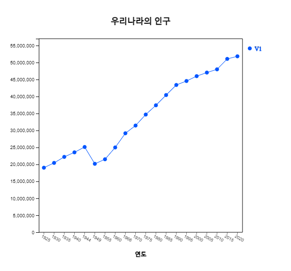
<그림 13.1>우리나라의 인구 시계열그림
|
우리가 자주 접하는 시계열로는 백화점이나 기업의 월별 매출액, 일별 종합주가지수, 연도별 농작물의 생산량, 연도별 수출 및 수입액에 대한 시계열, 연도별 국민소득 및 경제성장률 등 무수히 많이 있다.
[표 13.2]는 최근 6년 동안의 미국의 장난감/게임 업계의 월별 매출액 전월대비 변화율이고 <그림 13.2>는 이에 대한 그림이다. 전월대비 변화율이어서 0을 기준으로 오르내리며 매년 11월과 12월에 많은 증가세를 보이는 계절성 자료임을 관찰할 수 있다. 하지만 2020년 5월은 다른 연도와 달리 211%나 되는 증가율을 보인 특이점이다. 시계열은 원자료를 변화율과 같은 시계열로 변환하면 자료의 특성을 더 잘 살펴볼 수 있다.
[표 13.2] 미국의 장난감/게임 산업의 전월대비 변화율(%) (출처: 미국 통계청)
| 연.월 |
백분율 변화 |
2016.01
2016.02
2016.03
2016.04
2016.05
2016.06
2016.07
2016.08
2016.09
2016.10
2016.11
2016.12
2017.01
2017.02
2017.03
2017.04
2017.05
2017.06
2017.07
2017.08
2017.09
2017.10
2017.11
2017.12
2018.01
2018.02
2018.03
2018.04
2018.05
2018.06
2018.07
2018.08
2018.09
2018.10
2018.11
2018.12
2019.01
2019.02
2019.03
2019.04
2019.05
2019.06
2019.07
2019.08
2019.09
2019.10
2019.11
2019.12
2020.01
2020.02
2020.03
2020.04
2020.05
2020.06
2020.07
2020.08
2020.09
2020.10
2020.11
2020.12
2021.01
2021.02
2021.03
2021.04
2021.05
2021.06
2021.07
2021.08
2021.09
2021.10
2021.11
2021.12
|
-66.7
2.5
12.5
-9.0
-0.6
-4.4
4.3
0.0
6.1
8.6
56.4
53.6
-65.6
-0.1
14.7
-5.7
-2.4
-5.5
1.3
4.2
8.4
7.2
54.9
45.5
-63.6
3.6
39.8
-21.0
5.9
-12.4
-16.9
5.2
7.5
8.5
54.9
5.8
-46.2
-3.8
16.3
-8.4
6.6
-5.3
0.8
7.7
-1.2
12.2
46.7
11.7
-49.1
2.2
-28.2
-58.2
211.1
26.8
-0.8
7.0
4.9
5.8
44.1
8.5
-37.1
-12.2
37.0
-10.3
-0.5
-2.0
4.6
1.8
5.2
6.4
40.0
10.6
|
|
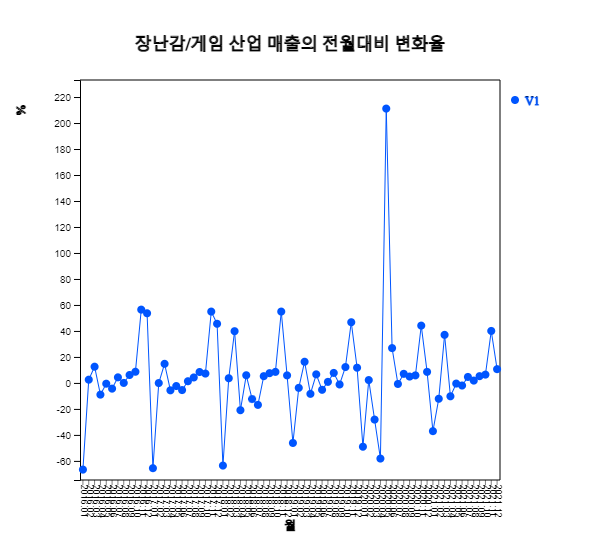
<그림 13.2>장난감/게임 산업의 전월대비 변화율(%)
|
대부분의 시계열은 크게 추세, 계절, 순환 및 기타 불규칙 요인 등의 네 가지 성분을 갖고 있다.
추세(trend)는 시간이 경과함에 따라 시계열이 직선혙태, 곡선형태 등 어떤 경향을 갖는 경우로,
다양한 추세 유형이 있다. 추세는 장기간에 걸쳐서 시계열에 나타나는 소비행태의 변동, 인구변동, 인플레이션
등의 경향을 파악하기 위한 변동요인이라고 할 수 있다.
계절(seasonal)요인은 분기별, 월별, 또는 요일별로 존재하는 단기적이면서 규칙적인 변동요인을 말하며
월별 강우량, 평균 기온, 아이스크림 판매량 등의 시계열이 계절 요인을 갖는다. 계절요인은 일반적으로
주기가 짧은 것이 보통인데, 계절에 의한 것이 아닌 주기가 장기간에 걸쳐서 나타날 때의 변동을
순환(cycle)요인이라고 한다. 이러한 순환요인의 관찰을 통하여 주기적인 경기의 활황 또는 불황 등을
예측할 수 있다. <그림 13.3>은 미국 S&P500 지수를 1997년에서 2016까지 그린 것으로 6년 주기의 순환성을 관찰할 수 있다.

<그림 13.3> 미국 S&P500 지수 (1997- 2016년)
|
추세․계절․순환 요인으로 설명될 수 없는 기타 요인을 불규칙(irregular) 또는 우연(random)요인
이라 하는데 시간에 따른 규칙적인 움직임과는 무관하게 랜덤한 원인에 의해 나타나는 변동요인을 의미한다.
13.1.1 시계열모형
시계열을 관찰하면 이 자료의 확률적 특성에 맞는 시계열모형(time series model)을 만들어 이 시계열이 미래에 어떻게 변하는지 예측할 수 있다. 현실에서 관찰되는 시계열이 매우 다양한 형태를 지니고 있기 때문에 시계열모형도 단순한 것에서부터 아주 복잡한 형태까지 매우 다양하다. 일반적으로 하나의 변량에 대한 시계열모형은 크게 다음과 같은 네 가지로 나눌 수 있다.
가. 시간에 관련된 함수를 이용하는 회귀모형
시계열을 시간에 관련된 함수의 형태로 나타내어 자료를 설명하거나 미래를 예측하는 모형은 가장 직관적이고 이해하기 쉬운 모형이다.
즉, 시계열을 확률변수 \(Y_1 , Y_2 , ... , Y_n\) 의 관측값이라 할 때
$$
Y_t \;=\; f(t) \;+\; \epsilon _ t , \,\, t=1,2, ... , n
$$
로 나타내는 모형으로 여기서 \(\epsilon_t\)는 함수 \(f(t)\)로 설명할 수 없는 시계열의 오차를 의미한다.
일반적으로 \(\epsilon_t\)는 서로 독립이고, 평균이 0 (\(E(\epsilon_t ) = 0\)), 분산이 모든 시간대에 같은
것 (\(Var(\epsilon_t ) = \sigma^2)\))으로 가정하는데 이를 백색잡음(white noise)이라 한다. 예를 들어
자료가 수평형이나 선형 추세가 있는 시계열은 다음과 같은 모형을 적용될 수 있다.
\( \qquad \text{수평형:} \qquad Y_t \;=\; \mu \;+\; \epsilon _ t \)
\( \qquad \text{선형추세:}\quad Y_t \;=\; a \;+\; b\, t \;+\; \epsilon _ t \)
나. 시계열을 분해(decomposition)하여 설명하는 모형
시계열을 네 가지 변동요인, 즉, 추세(\(T_t\)), 주기(\(C_t\)), 계절(\(S_t\)) 및 불규칙(\(I_t\)) 요인으로
분해(decomposition)하여 설명하는 모형은 오랜 기간 동안 경험적인 사실을 바탕으로 사용해온 분석법으로
다음의 가법모형과 승법모형으로 나눌 수 있다.
\( \qquad \text{가법모형:} \qquad Y_t \;=\; T_t \;+\; C_t \;+\; S_t \;+\; I_t \)
\( \qquad \text{승법모형:} \qquad Y_t \;=\; T_t \;\times\; C_t \;\times\; S_t \;\times \; I_t \)
여기에서 \(T_t\), \(C_t\), \(S_t\)는 결정적 함수(deterministic function) 이고 \(I_t\)는 확률변수이다.
승법모형에서 로그를 취하면 가법모형이 된다. 자료수가 충분하지 않을 경우에는 주기요인은 모형에서 생략할 수 있다.
다. 이동평균 및 지수평활(exponential smoothing) 모형
시계열의 예측은 과거의 자료보다는 현재의 자료에 더 관련이 많이 있는 경우가 많다. 위의 두 종류 모형은
과거의 시계열과 현재 시계열의 관련성을 크게 고려하지는 않는 모형이다. 이동평균 및 지수평활을 이용한
모형은 시계열의 예측이 최근 자료에 더 많이 관련되어 있는 사실을 이용하여 자료를 설명하고 예측을 하는
모형으로 많이 사용된다.
라. 박스-젠킨스(Box-Jenkins)의 ARIMA 모형
앞의 모형들은 모든 형태의 시계열에 적용될 수 있는 방법은 아니고 자료의 형태에 따라 분석자가 선택하여
적용되게 된다. 박스(Box)와 젠킨스(Jenkins)는 정상형 또는 비정상형의 모든 시계열에 적용될 수 있는
다음과 같은 일반적인 ARIMA 모형을 제시하였다.
$$
Y _{t} \,=\, \mu \,+\, \phi_{1} \, Y _{t-1} \,+\, \phi _{2} \, Y_{t-2} \,+\, \cdots \,+\, \epsilon _{t} \,+\, \theta _{1} \, \epsilon _{t-1} \,+\, \theta _{2} \, \epsilon _{t-2} \,+\, \cdots
$$
ARIMA 모형은 관측된 시계열을 한 시계열 모집단에서 추출된 표본으로 간주하여 각각의 모형의 확률적
성질을 연구하고, 모수의 추정 및 검정을 통하여 적절한 시계열모형을 수립하게 된다. ARIMA 모형을 위해서는
시점 \(n\)과 시점 \(n-k\) 사이의 상관계수(이를 자기상관계수(auto correlation coefficient)라 함)를
이용한다. ARIMA 모형은 이 책의 수준을 넘으므로 관심있는 독자는 참고문헌을 살펴보기 바란다.
위의 시계열모형에서 회귀모형과 ARIMA 모형은 통계이론에 근거한 체계적인 모형이고, 분해에 의한 모형과 지수평활모형은 경험과 직관에 의한 방법이라 할 수 있다. 일반적으로 수학함수를 이용하는 회귀모형, 분해를 이용하는 모형은 느리게 변동하는 시계열의 예측에 적합한 모형으로 알려져 있고, 반면에 지수평활모형이나 ARIMA 모형은 매우 빠르게 변하는 시계열의 예측에 효과적인 것으로 알려져 있다.
모든 시계열모형은 갑작스런 변화에 따른 예측은 불가능하다. 그리고 시계열은 아주 다양한 형태를 지니기 때문에 한 시계열모형이 다른 모형보다 항상 우수하다고 단언할 수는 없다. 따라서 어느 시계열에 대해 한 가지 모형만 적용하기보다는 여러 모형을 수립하여 비교하여 보고, 서로 다른 모형의 결합, 또는 해당 시계열에 대해 잘 알고 있는 전문가의 의견을 종합하여 최종 모형을 결정하는 노력이 필요하다.
13.1.2 시계열모형의 평가
시계열을 확률변수 \(Y_1 , Y_2 , ... , Y_n\)의 관측값이라 하고 모형에 의해서 예측된 값을이라 하자.
만일 모형이 정확히 일치한다면 관측값과 예측값이 같게 되어 모형의 오차 \(\epsilon_t\)가 0 이 된다.
일반적으로 시계열모형의 오차 \(\epsilon_t\)는 평균이 0, 분산이 \(\sigma^2\)인 독립적인 동일분포
(대개 정규분포)를 갖는 확률변수라고 가정한다. 시계열모형의 정확성을 측도를 이용하여 평가할 수도 있는데
대개 관측값에서 예측값을 뺀 잔차(residual) \(Y_t \,-\, {\hat Y}_t\)를 이용한다. 이러한 측도에는
일반적으로 다음과 같은 평균제곱오차(mean squared error: MSE)가 많이 이용되는데, MSE의 값이
작을수록 예측된 모형이 적합하다고 판단을 내린다.
$$
{MSE} \,=\, \frac{ \sum_{t=1}^n \, ( Y_t\,-{\hat Y}_t \,)^{2} } {n}
$$
평균제곱오차 MSE는 오차 \(\epsilon_t\)의 분산 \(\sigma^2\)에 대한 추정량으로 이용된다.
MSE는 값이 클 수가 있어
평균제곱오차의 제곱근(root mean squared error: RMSE)이 많이 사용된다.
$$
{RMSE} \,=\, \sqrt{MSE }
$$
13.2 시계열의 평활
시계열의 추세 등을 잘 관찰하여 시계열모형을 만들기 위해서는 원자료를 이용할 수도 있지만 자료를 평활(smoothing)하여 살펴보는 경우가 많다. 주식시세와 같은 시계열에서는 우발적인 우연요인이나 규칙을 찾기 어려운 순환요인으로 인해 일시적이거나 단기적인 변동이 커서 지속적인 경향을 찾아내기 힘든 경우가 많다. 이 경우 일시적이거나 단기적인 변동을 제거하여 전체적이고 장기적인 추세를 효과적으로 파악하기 위한 방법으로 이용되는 것이 평활법(smoothing techniques)인데 중심이동평균법(centered moving average method)과 지수평활법(exponential smoothing method)이 많이 이용된다.
[ : . ]
<그림 13.4> 매년 종가기존 원유 가격의 평활
13.2.1 중심이동평균
[표 13.3]의 시계열은 1987년부터 2022년까지 매년 종가기준 셰계 원유가격이다. <그림 13.4>에서 보면 시계열의 단기적인 등락이 큼을 알 수 있는데 그 주된 원인으로는 두 차례에 걸친 석유파동으로 인한 가격폭등을 들 수 있을 것이다. 하지만 석유파동과 같은 원인은 지속적이지 않고 단기적이므로 우리가 만약 장기적인 휘발유 소비량의 추세에 관심이 있다면 이런 단기적인 원인에 의한 변동을 제거해서 보는 것이 더 효과적일 것이다.
[표 13.3] 세계의 원유가격(연말 종가기준, US$)과 5점-중심이동평균
| 연도r |
원유가격 |
5점 중심이동평균 |
1987
1988
1989
1990
1991
1992
1993
1994
1995
1996
1997
1998
1999
2000
2001
2002
2003
2004
2005
2006
2007
2008
2009
2010
2011
2012
2013
2014
2015
2016
2017
2018
2019
2020
2021
2022
|
16.74
17.12
21.84
28.48
19.15
19.49
14.19
17.77
19.54
25.90
17.65
12.14
25.76
26.72
19.96
31.21
32.51
43.36
61.06
60.85
95.95
44.60
79.39
91.38
98.83
91.83
98.17
53.45
37.13
53.75
60.46
45.15
61.14
48.52
75.21
106.95
|
20.666
21.216
20.630
19.816
18.028
19.378
19.010
18.600
20.198
21.634
20.446
23.158
27.232
30.752
37.620
45.798
58.746
61.164
68.370
74.434
82.030
81.206
91.920
86.732
75.882
66.866
60.592
49.988
51.526
53.804
58.096
67.394
|
시계열의 N점 중심이동평균(N-point centered moving average)이란 한 시점을 중심으로 개의 자료의
평균을 말한다. 예를 들어, 원유 가격 자료에서 어떤 특정 년도의 5점 중심이동평균의 값은 특정 년도 이전의
2년간의 자료, 해당 년도, 이후의 2년간 자료의 평균을 구한 값이다. 식으로 나타내 보면 \(M_t\) 를 시간
\(t\) 에서의 이동평균이라 할 때
$$
M_t = \frac{Y_{t-2} \,+\, Y_{t-1} \,+\, Y_{t} \,+\, Y_{t+1} \,+\, Y_{t+2} } {5 }
$$
예를 들면 1989년의 중심이동평균은 다음과 같다.
\(\qquad M_{1989} \,=\, \frac {Y_{1987} + Y_{1988} +Y_{1989} + Y_{1990} + Y_{1991} } {5 } \)
\( \qquad \qquad \quad =\, \frac {16.74 + 17.12 + 21.84 + 28.48 + 19.15} {5} \,=\, 20.6660 \)
이와 같이 구한 모든 5점 중심이동평균의 값을 계산하면 [표 13.3]과 같고 그 그림이 <그림 13.4>와 같다.
여기서 처음 2년과 마지막 2년의 중심이동평균은 구할 수 없다는 점에 유의하자. 이동평균의 그래프가
단기적인 변동이 제거됨으로써 본래 자료의 그래프보다 장기적인 추세를 파악하기에 더 좋음을 알 수 있다.
N점 이동평균에서 N의 값의 선택은 중요하다. 큰 N의 값은 보다 부드러운 이동평균을 제공하겠지만 양쪽
끝에서 더 많은 점들을 잃게 되고 또 중요한 추세의 변화 탐지에 둔감해지는 단점이 있다. 반면에 작은 N을
선택하면 양쪽 끝의 자료를 덜 잃게 되겠지만 단기적인 변동을 충분히 제거하지 못해 평활의 효과를 얻지 못할
수도 있을 것이다. 보통은 몇 가지 N의 값을 시도해 봐서 놓쳐서는 안 될 중요한 변화를 반영하면서도 평활의
효과도 거두고 또한 양쪽 끝의 점을 너무 잃지 않도록 균형을 취하여 결정한다.
N의 값이 짝수인 경우에는 기준 년도 양 쪽으로 같은 수의 자료를 갖는 중심이동평균을 구할 수 없는 어려움이
있다. 가령 1987년부터 1990년까지의 4점 이동평균의 중심은 1988년과 1989년 사이에 있다. 이를
\(M_{1988.5}\)라고 표시하면
\( \qquad M_{1988.5} \,=\, \frac {Y_{1987} + Y_{1988} +Y_{1989} + Y_{1990} } {4 } \)
\( \qquad \qquad \quad \,=\, \frac {16.74 + 17.12 + 21.84 + 28.48 } {4} \,=\, 21.045 \)
이렇게 구한 4점 이동평균을 비중심 4점 이동평균이라 하는데 이와 같이 N이 짝수인 경우의 비중심이동평균은
본래 자료의 관측 년도와 일치하지 않아 불편한 점이 있다. N이 짝수인 경우에는 잇닿은 2개의 비중심이동평균
값의 평균으로 구한다. 즉 1989년도의 중심 4점 이동평균은 \(M_{1988.5}\)와 \(M_{1989.5}\)의 평균이다.
\( \qquad M_{1989} \,=\, \frac {M_{1988.5} \,+\, M_{1989.5} } {2 } \)
\( \qquad \qquad \quad =\, \frac {21.0450 \,+\, 21.6475 } {2} \,=\, 21.3463 \)
시계열이 분기별 또는 월별일 경우 4점 중심이동평균이나 12점 중심이동평균은 1년의 평균값이므로 계절성 없이
자료를 관찰할 때 많이 이용된다.
13.2.2 지수평활
이동평균을 가중평균이라는 다른 관점에서 살펴보면 3점 이동평균은 3개의 자료에 같은 가중치 \(\frac{1}{3}\)
을 준 것이다.
$$
M_t \,=\, \frac{Y_{t-1} \,+\, Y_{t} \,+\, Y_{t+1} } {3 } \,=\, \frac{1}{3}Y_{t-1} \,+\, \frac{1}{3}Y_{t} \,+\, \frac{1}{3}Y_{t+1}
$$
가중값이 \(w_1 , w_2 , ... , w_n\)일 때 시계열의 가중이동평균 \(M_t\)는 다음과 같이 정의된다.
$$
M_t \,=\, \sum_{i=1}^{n} w_i Y_{i}
$$
여기서 \(n\)은 자료수이고 가중값 \(w_i \ge 0\), \(\sum_{i=1}^{n} w_i = 1 \)이다.
목적에 따라 다른 가중값을 갖는 여러 가지 가중평균이 쓰일 수 있다. 그 중에서 현재와 가까운 자료에
더 많은 가중값을 갖게하고 현재에서 멀수록 작은 가중값을 주는 평활법을 지수평활법
(exponential smoothing)이라 한다. 지수평활법은 0과 1사이의 값을 갖는 지수평활상수
(exponential smoothing constant) \(\alpha\)에 의해 결정되는데 지수평활된 자료 \(E_t\)는 다음과 같이
계산된다.
\( \qquad E_{1} \,=\, \alpha \,Y_{1} \,+\, (1- \alpha)\, E_{0} \)
\( \qquad E_{2} \,=\, \alpha \,Y_{2} \,+\, (1- \alpha)\, E_{1} \)
\( \qquad E_{3} \,=\, \alpha \,Y_{3} \,+\, (1- \alpha)\, E_{2} \)
\( \qquad \cdots \)
\( \qquad E_{t} \,=\, \alpha \,Y_{t} \,+\, (1- \alpha)\, E_{t} \)
여기서 초기값 \(E_{0}\)가 필요한데 \(Y_1\)을 대개 많이 사용하고 자료의 평균값을 이용할 수도 있다.
시점 \(t\)에서 지수평활된 값 \(E_t\)는 현재의 자료에 \(\alpha\)의 가중치를 주고, 그 전의 평활된
자료에 \(1-\alpha\)의 가중치를 둔다. \(E_t\)를 본래의 자료 \(Y_t\)로 표시해 보면
$$
E_t \,=\, \alpha Y_t + (1-\alpha) Y_{t-1} + \alpha(1-\alpha)^2 Y_{t-2} + \cdots + \alpha(1-\alpha)^{t-2} Y_2 + (1-\alpha)^{t-1} Y_1
$$
이 됨을 알 수 있다. 따라서 지수평활법은 현재와 과거의 모든 자료를 이용하되 현재의 자료에 가장 높은
가중치 α를 주고 현재의 시점에서 멀어질수록 더 낮은 가중치를 두게 된다.
[표 13.3]의 원유 가격 시계열을 초기값 \(E _{1986} = Y _{1987} \), 지수평활상수 \(\alpha\) = 0.3 으로
지수평활하여 보면 다음과 같다
\( \qquad E_{1986} \,=\, E_{1987} = 16.74 \)
\( \qquad E_{1987} \,=\, 0.3 \,Y_{1987} \,+\, (1- 0.3)\, E_{1986} \,=\, (0.3)(16.74)+(0.7)(16.74)=16.74 \)
\( \qquad E_{1988} \,=\, 0.3 \,Y_{1988} \,+\, (1- 0.3)\, E_{1987} \,=\, (0.3)(17.12)+(0.7)(16.74)=16.854 \)
\(\alpha\) = 0.3으로 지수평활된 모든 자료가 [표 13.4]에 주어져 있다. 지수평활법에서는 이동평균법과는
달리 양끝에서 손실된 자료가 생기지 않음을 알 수 있다. 원유 가격 시계열과 지수 평활된 자료를
<그림 13.5>에 나타내었다. 평활된 자료는 본래 자료보다 그 변화가 심하지 않음을 알 수 있다. \(\alpha\)의
값을 작게 하면 현재보다는 과거의 자료에 보다 많은 비중을 두게 되어 현재의 자료의 급격한 변화에 덜
민감하게 된다. 반대로 \(\alpha\)의 값을 1에 가깝게 할수록, 즉, 현재의 자료에 보다 많은 비중을 두게
될수록 평활된 자료는 본래의 자료와 닮게 되므로 평활의 효과가 없어지게 된다.
[표 13.4] 원유가격과 지수평활 α = 0.3
| 연도 |
원유가격 |
지수평활
α=0.3 |
1987
1988
1989
1990
1991
1992
1993
1994
1995
1996
1997
1998
1999
2000
2001
2002
2003
2004
2005
2006
2007
2008
2009
2010
2011
2012
2013
2014
2015
2016
2017
2018
2019
2020
2021
2022
|
16.74
17.12
21.84
28.48
19.15
19.49
14.19
17.77
19.54
25.90
17.65
12.14
25.76
26.72
19.96
31.21
32.51
43.36
61.06
60.85
95.95
44.60
79.39
91.38
98.83
91.83
98.17
53.45
37.13
53.75
60.46
45.15
61.14
48.52
75.21
106.95
|
16.740
16.854
18.350
21.389
20.717
20.349
18.501
18.282
18.659
20.832
19.877
17.556
20.017
22.028
21.408
24.348
26.797
31.766
40.554
46.643
61.435
56.385
63.286
71.714
79.849
83.443
87.861
77.538
65.416
61.916
61.479
56.580
57.948
55.120
61.146
74.888
|
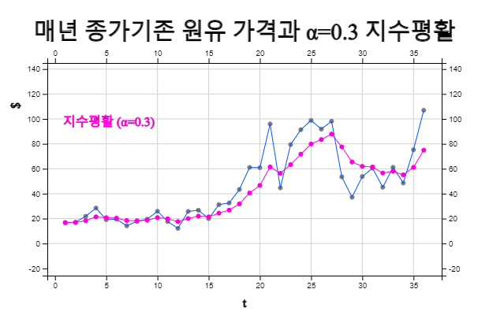
<그림 13.5> 매년 종가기존 원유 가격과 α=0.3 지수평활
13.2.3 중심이동중앙값(필터링)
시계열의
N점 중심이동중앙값(N-point centered moving median)이란 한 시점을 중심으로 N개의 자료의
중앙값을 말한다. 예를 들어, 원유 가격 자료에서 어떤 특정 년도의 5점 중심이동중앙값은 특정 년도 \(t\) 이전의
2년간의 자료, 해당 년도, 이후의 2년간 자료의 중앙값이다. 자료를 \(Y_{t-2}, Y_{t-1}, Y_{t}, Y_{t+1}, Y_{t+2} \)
로 표시하고 이 자료를 작은값에서 큰 값으로 정렬한 후 \(Y_{(t-2)} ,Y_{(t-1)} , Y_{(t)} , Y_{(t+1)} , Y_{(t+2)} \)
로 나타내면 중앙값은 \(Moving Median_t \,=\, Y_{(t)}\)가 된다.
예를 들면 [표 13.3]의 원유 가격에 대한 1989년의 중심이동중앙값은 다음과 같다.
\(\qquad MovingMedian_{1989} \,=\, median \{ Y_{1987} , Y_{1988} ,Y_{1989} , Y_{1990} , Y_{1991} \} \)
\(\qquad \qquad \qquad \qquad \qquad \;\;=\, median \{16.74, 17.12 , 21.84 , 28.48,19.15 \} \,=\, 19.15 \)
이와 같이 구한 모든 5점 중심이동중앙값과 그 그래프를 [표 13.5]과 <그림 13.6> 에 나타내었다. 여기서
처음 2년과 마지막 2년의 중심이동중앙값은 구할 수 없다는 점에 유의하자. 중심이동중앙값은 이상점을
제거(필터링)하기 때문에 본래 자료보다 많이 평활하게 된다.
[표 13.5] 원유가격과 5점-중심이동중앙값
| 연도 |
원유가격 |
5점 중심이동중앙값 |
1987
1988
1989
1990
1991
1992
1993
1994
1995
1996
1997
1998
1999
2000
2001
2002
2003
2004
2005
2006
2007
2008
2009
2010
2011
2012
2013
2014
2015
2016
2017
2018
2019
2020
2021
2022
|
16.74
17.12
21.84
28.48
19.15
19.49
14.19
17.77
19.54
25.90
17.65
12.14
25.76
26.72
19.96
31.21
32.51
43.36
61.06
60.85
95.95
44.60
79.39
91.38
98.83
91.83
98.17
53.45
37.13
53.75
60.46
45.15
61.14
48.52
75.21
106.95
|
19.15
19.49
19.49
19.15
19.15
19.49
17.77
17.77
19.54
25.76
19.96
25.76
26.72
31.21
32.51
43.36
60.85
60.85
61.06
79.39
91.38
91.38
91.83
91.83
91.83
53.75
53.75
53.45
53.75
53.75
60.46
61.14
|
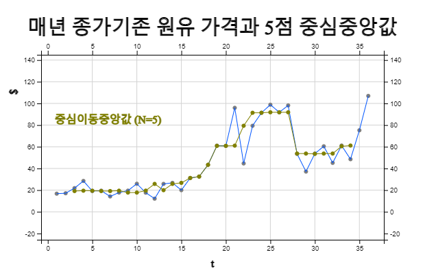
<그림 13.6> 매년 종가기존 원유 가격과 5점 중심이동중앙값
N의 값이 짝수인 경우에는 기준 년도 양 쪽으로 같은 수의 자료를 갖는 중심 이동중앙값을 구할 수 없는
어려움이 있다. 가령 1987년부터 1990년까지의 4점 이동중앙값의 중심은 1988년과 1989년 사이에 있다.
이를 \((MovingMedian)_{1988.5}\)라고 표시하면
\(\qquad (MovingMedian)_{1988.5} \,=\, median \{Y_{1987} , Y_{1988} , Y_{1989} , Y_{1990} \} \)
\(\qquad \qquad \qquad \qquad \qquad \;=\, median \{16.74 , 17.12 , 21.84 , 28.48 \} \,=\, \frac {17.12 +21.84} {2} = 19.48 \)
이렇게 구한 4점 이동중앙값을 비중심 4점 이동중앙값이라 하는데 이와 같이 N이 짝수인 경우의
비중심이동평균은 본래 자료의 관측 년도와 일치하지 않아 불편한 점이 있다. N이 짝수인 경우에는
잇닿은 2개의 비중심이동중앙값의 값의 평균으로 구한다. 즉 1989년도의 중심 4점 이동중앙값은
\((MovingMedian)_{1988.5}\)와 \((MovingMedian)_{1989.5}\)의 평균이다.
13.3 시계열의 변환
시계열은 직접 그래프를 그려 살펴볼 수도 있지만 여러 가지 특징을 살펴보기 위해 증감백분율 변화를 살피기도 하고 기준시점 대비 백분율인 지수를 구하기도 한다. 또한 직전 자료와의 관련성을 살펴보기 위해 시차를 두고 비교하기도 하고 차분을 이용하여 수평형 자료로 변환하기도 한다. 시계열이 시간에 따라 분산이 커지면 로그나 제곱근, 박스-콕스 변환 등을 이용하여 시계열모형을 적용하기 좋은 형태로 변환하기도 한다.
[ : ]
13.3.1 백분율
가. 백분율 증감
시계열은 값의 증감을 살펴볼 수도 있지만 백분율 증감을 계산하면 쉽게 변화를 살펴볼 수 있다.
시계열을 \(Y_1 , Y_2 , ... , Y_n\)로 표시할 때 직전 자료와 대비한 증감백분율 \(P_t\)는 다음과 같다.
$$
P_{t} \,=\, \frac {Y _{t} - Y_{t-1}} {Y_{t-1}} \times 100 , \quad t=2,3, ... , n
$$
[표 13.6]은 2010년에서 2020년까지 우리나라 주택수로서 이에 대해 직전 자료 대비 증감백분율에 대한 그림을 그리면 <그림 13.7>과 같다. 이 증감변화율을 살펴보면 원래의 시계열은 전반적인 증가 추세이지만 직전년도 증감변화율은 많은 증감이 있음을 쉽게 관찰할 수 있다. 즉, 2014년도에 전년도 대비 2.23%의 주택수 증가가 있었고 2018년에도 2.48%의 주택수 증가가 있었음을 관찰할 수 있다.
\(\qquad P_{2014} \,=\, \frac{19161.2 - 18742.1} {18742.1} \times 100 \,=\, 2.23 \)
[표 13.6] 한국의 연도별 주택수와 전년대비 백분률변화 그림
(통계청, 단위 1000)
| 연도 |
주택수 |
% 변화율 |
2010
2011
2012
2013
2014
2015
2016
2017
2018
2019
2020
|
17738.8
18082.1
18414.4
18742.1
19161.2
19559.1
19877.1
20313.4
20818.0
21310.1
21673.5
|
1.93
1.83
1.77
2.23
2.07
1.62
2.19
2.48
2.36
1.70
|
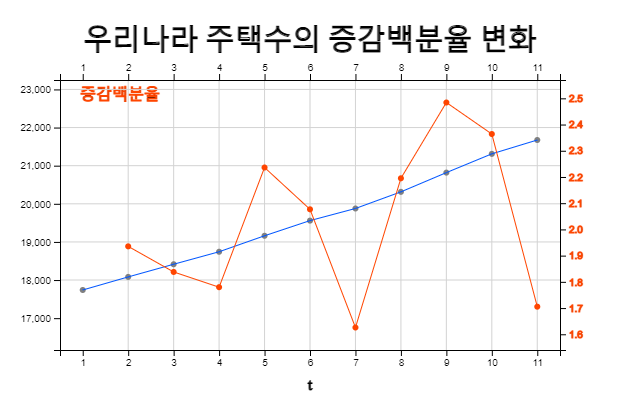
<그림 13.7> 우리나라 주택수의 증감백분율 변화
나. 단순지수
시간에 따른 변화의 특성을 쉽게 파악하기 위해 백분율을 이용하는 다른 방법 중의 하나는
지수를
계산해 보는 것이다. 지수(index number)란 시계열의 시간에 따른 변화를 나타내어 주는 수치로서 어떤
시점의 시계열의 지수 \((Index)_t\)는 기준시(base period)라고 부르는 미리 정해진 시점 \(t_0\)에 대한
전체 시계열자료의 백분율이다.
$$
(Index)_{t} \,=\, \frac {Y _{t}} {Y_{t_0}} \times 100 , \quad t=1,2,..., n
$$
경제 분야에서 많이 쓰이는 지수로는 가격지수(price index)와 수량지수(quantity index)가 있다. 예를 들어 소비자 물가지수는 전체소비자 물가를 반영할 수 있는 일단의 물품들의 가격 변화를 나타내는 가격 지수이고, 매해 총 소비 전력량의 변화를 나타내는 지수는 수량지수이다. 지수를 계산하는 방법에는 여러 가지가 있는데 크게 나누어, 지수가 대표하는 물품의 개수가 한 개일 때를 단순지수(simple index number)라 하고 소비자 물가지수에서와 같이 여러 개일 때를 복합지수(composite index number)라 한다.
[표 13.7]은 2010년부터 2020년까지 우리나라 주택수에 대해 기준시를 2010년으로 하여 단순지수를 구한 것이다. 지수에 대한 그림을 살펴보면 이 경우에는 원래 시계열과 추세와 큰 변화가 없을 알 수 있다. 2010년대비 2020년에는 22.18%의 주택수 증가가 있음을 알 수 있다.
\(\qquad (Index)_{2020} \,=\, \frac{Y _{2020}} {Y_{2010}} \times 100 \,=\, \frac{21673.5} {17738.8} \times 100 \,=\, 122.18 \)
[표 13.7] 주택수에 대한 단순지수
(통계청, 단위 1000)
| 연도 |
주택수 |
단순지수
기준시: 2010 |
2010
2011
2012
2013
2014
2015
2016
2017
2018
2019
2020
|
17738.8
18082.1
18414.4
18742.1
19161.2
19559.1
19877.1
20313.4
20818.0
21310.1
21673.5
|
100.00
101.94
103.81
105.66
108.02
110.26
112.05
114.51
117.36
120.13
122.18
|
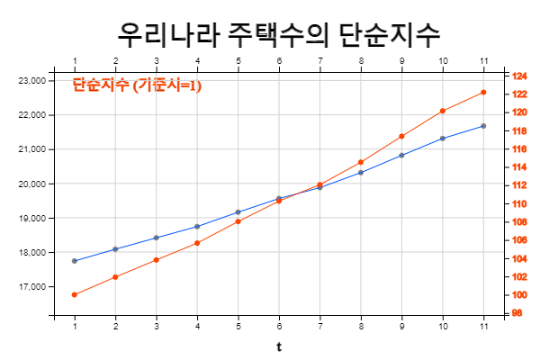
<그림 13.8> 우리나라 주택수의 단순지수
다. 복합지수
복합지수(composite index)란 여러 물품의 가격이나 수량의 변화를 특정한 시점을 기준시(base period)로 정한 후 각 시점에서의 자료를 기준시점에 대비한 백분율 값으로 계산한 것이다. 가장 많이 이용되는 복합지수의 예로서 소비자 물가지수를 들 수 있는데 이 지수는 소비자 물가에 영향을 주는 500여개 물품의 가격변동을 반영하고 있다. 이밖에 많이 이용되는 복합지수에는 주식시장에서 거래되는 모든 상장된 주식의 가격변동을 조사하는 종합주가지수 등을 들 수 있다.
복합지수는 각 물품의 가격에 이 물품이 소비되는 수량을 가중치로 하여 계산하는 가중복합지수
(weighted composite index)가 많이 이용된다. 이러한 가중복합지수를 계산할 때 기준시의 소비량을
가중치로 하는 경우를 라스페이레스(Laspeyres) 방식이라 하고, 현 시점의 소비량을 가중치로
하는 경우를 파셰(Paasche) 방식이라 한다. 일반적으로 라스페이레스 방식의 가중복합지수가
많이 이용되는데 소비자물가지수가 그 대표적인 예이다. 파셰방식의 가격지수는 시간에 따라 가중치로
쓰이는 물품의 소비량 변화가 클 때 사용되는데, 각 시점에서의 소비량이 알려져 있을 때에만 쓸 수 있다.
각 시점에서의 소비량을 그때마다 조사하는 데에는 비용이 많이 든다.
\(P_{1t} , \cdots , P_{kt} \)를 시점 \(t\)에서의 \(k\)개의 물품의 가격이라고 하고
\(Q_{1t_0} , \cdots , Q_{kt_0} \)를 기준시 \(t_0\)의 각 물품의 유통량이라고 할 때 각각의 복합지수
계산공식은 다음과 같다.
\( \qquad \text{Laspeyres Index:} \quad (Index)_t \,=\, \frac { Q_{1t_0} P_{1t} + \cdots + Q_{kt_0} P_{kt} } {Q_{1t_0} P_{1t_0}+ \cdots + Q_{kt_0} P_{kt_0} } \times 100 \)
\( \qquad \text{Paasche Index:} \qquad (Index)_t \,=\, \frac { Q_{1t} P_{1t} + \cdots + Q_{kt} P_{kt} } {Q_{1t} P_{1t_0} + \cdots + Q_{kt} P_{kt_0} } \times 100 \)
[표 13.8]의 자료는 2020년도 월별 세 가지 금속의 가격과 생산량을 나타낸다.
[표 13.8] 2020 세 금속의 가격(달러/톤)과 생산량(톤) 및 복합지수
월 |
구리
가격 생산량 |
철
가격 생산량 |
납
가격 생산량 |
라스페이레스 파세 |
1
2
3
4
5
6
7
8
9
10
11
12
|
1361.6 100.7
1399.0 95.1
1483.6 104.0
1531.6 95.6
1431.2 103.3
1383.8 106.9
1326.8 95.9
1328.8 96.7
1307.8 95.7
1278.4 89.1
1354.2 100.5
1305.2 96.9
|
213 4311
213 4497
213 5083
213 5077
213 5166
213 4565
213 4329
213 4057
213 3473
213 3739
213 3817
213 3694
|
530.0 46.1
520.0 47.0
529.0 51.0
540.0 23.0
531.0 26.5
580.0 13.5
642.8 27.4
602.6 25.8
513.6 20.5
480.8 24.6
528.4 21.5
462.2 27.9
|
100.00 100.00
100.31 100.28
101.13 101.01
101.63 101.35
100.65 100.57
100.42 100.27
100.16 99.98
100.00 99.87
99.43 99.38
99.01 99.07
99.92 99.92
99.18 99.21
|
[표 13.8]에서 1월을 기준시로 하여 2월의 자료에 대해서 라스파이레스지수는 다음과 같다.
\( \qquad (Index)_t \,=\, \frac { Q_{1t_0} P_{1t} + \cdots + Q_{kt_0} P_{kt} } {Q_{1t_0} P_{1t_0}+ \cdots + Q_{kt_0} P_{kt_0} } \times 100 \)
\( \qquad \quad \,=\, \frac {(100.7)(1399.0)+(4311)(213)+(46.1)(520) } {(100.7)(1361.6)+(4311)(213)+(47.0)(530) } \,=\, 100 .31 \)
파셰지수는 다음과 같다.
\( \qquad (Index)_t \,=\, \frac { Q_{1t} P_{1t} + \cdots + Q_{kt} P_{kt} } {Q_{1t} P_{1t_0} + \cdots + Q_{kt} P_{kt_0} } \times 100 \)
\( \qquad \quad \,=\, \frac {(95.1)(1399.0)+(4497)(213)+(47.0)(520) } {(95.1)(1361.6)+(4497)(213)+(47.0)(530) } \,=\, 100.28 \)
[표 13.8]에서 특히 마지막 4사분기의 무쇠와 납의 생산량은 기준시인 1월의 생산량과 상당히 차이가 남을 알 수 있다. 이와 같이 수량의 변동이 심하고 또한 각 시점의 수량을 알고 있는 경우에는 파셰지수가 해당 시점의 가격의 변화를 적절히 반영하므로 가장 좋은 지수라고 할 수 있다.
13.3.2 시차와 차분
가. 시차
시계열에서 현재의 자료는 대개 과거의 자료와 연관이 있을 수 있다.
시차(lag)는 현재 시점의 자료와
한 시점 또는 일정한 과거 시점의 관측값을 비교하기 위한 변환을 의미한다. 즉 관측된 시계열을
\(Y_1 , Y_2 , ... , Y_n\) 이라고 할 때 시차 1의 시계열은 \( - , Y_1 , Y_2 , ... , Y_{n-1}\)가 된다.
시차 k의 자료는 원자료보다 처음 k개의 자료가 없음을 주목하라.
시차 변환된 자료와 원자료의 상관계수를 자기상관계수(autocorrelation coefficient)라 하는데
시계열의 평균을 \(\small \overline Y\)라 할때 시차 k 자료와의 상관계수 \(r_k\)는 다음과 같이 정의된다.
$$ \small
r_k = \frac { \sum_{t = k+1}^ n (Y_t - \overline Y ) (Y_{t-k} - \overline Y ) } { \sum _{t =1}^n (Y_t - \overline Y )^2 }, \quad k=0, 1, 2, ..., n-1
$$
이러한 \(r_1 , r_2 , ... , r_k \)를 자기상관함수(autocorrelation function)라고 하는데 시계열
모형을 결정하는데 이용된다.
[표 13.9]는 최근 2년동안의 월별 소비자 물가지수와 이 자료에 대하여 시차 1에서 12까지의 자료를 구한 것이다. 이를 이용한 자기상관계수는 [표 13.10]과 같다. <그림 13.8>은 원 시계열과 자기상관함수의 그림이다.
[표 13,9] 물가지수에 대한 시차1, 시차2, ... , 시차 12의 시계열
| t |
연월 |
물가지수 |
시차 1 |
시차 2 |
... |
시차 12 |
1
2
3
4
5
6
7
8
9
10
11
12
13
14
15
16
17
18
19
20
21
22
23
24
|
2020.01
2020.02
2020.03
2020.04
2020.05
2020.06
2020.07
2020.08
2020.09
2020.10
2020.11
2020.12
2021.01
2021.02
2021.03
2021.04
2021.05
2021.06
2021.07
2021.08
2021.09
2021.10
2021.11
2021.12
|
102.3
102.8
103.7
104.1
104.0
104.3
104.5
104.9
104.8
104.8
104.2
104.4
105.0
105.5
106.1
106.7
107.1
107.0
106.7
107.4
108.0
107.7
107.8
108.3
|
102.3
102.8
103.7
104.1
104.0
104.3
104.5
104.9
104.8
104.8
104.2
104.4
105.0
105.5
106.1
106.7
107.1
107.0
106.7
107.4
108.0
107.7
107.8
|
102.3
102.8
103.7
104.1
104.0
104.3
104.5
104.9
104.8
104.8
104.2
104.4
105.0
105.5
106.1
106.7
107.1
107.0
106.7
107.4
108.0
107.7
|
...
|
102.3
102.8
103.7
104.1
104.0
104.3
104.5
104.9
104.8
104.8
104.2
104.4
|
[표 13.10] 시차별 자기상관계수n
| 시차 |
자기상관함수 |
1
2
3
4
5
6
7
8
9
10
11
|
0.8318
0.6772
0.5651
0.4479
0.3333
0.2547
0.1647
0.0755
-0.0143
-0.0854
-0.1737
|
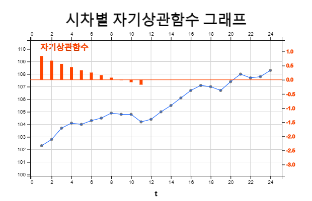
<그림 13.9> 시차별 자기상관함수 그래프
나. 차분
[표 13.10]의 물가지수는 선형 추세를 가지고 있어서 이 추세에 대한 모형을 세울 수도 있지만 어느 경우에는
시계열을 수평형 추세로 바꾸어 모형을 만들 수 잇다. 선형 추세를 수평형 추세로 변환하는 방법은
차분(differencing)을 이용하는 것이다. 시계열을 \(Y_1 , Y_2 , ... , Y_n \)라 할 때
$$
▽ Y_t \,=\, Y_t \,-\, Y_{t-1}, \quad t=2,3,...,n
$$
로 계산된 \(▽ Y_t\)를 1차 차분(first-order differencing)이라고 한다. 원자료가 선형 추세라면
1차 차분 시계열은 기울기의 변화를 의미함으로 수평형 시계열이 된다. \(▽ Y_t\)를 다시 한번 차분한
$$
▽^2 Y_t \,=\, ▽Y_t \,-\, ▽Y_{t-1} \,=\, ( Y_t \,-\, Y_{t-1} ) - ( Y_{t-1} \,-\, Y_{t-2}), \quad t=3,4,...,n
$$
를 2차 차분(second-order difference)이라고 한다. 원자료가 이차곡선을 갖는 추세일 경우 2차 차분
시계열이 수평형 시계열이 된다.
[표 13.10]의 자료를 1차 차분하여 그림을 그리면 <그림 13.10>과 같다.
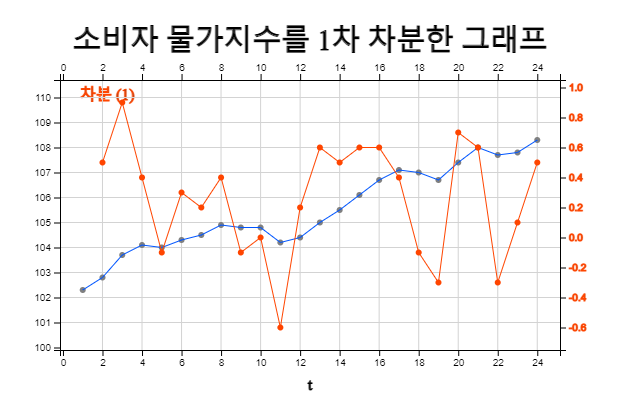
<그림 13.10> 소비자 물가지수를 1차 차분한 그래프
13.3.3 수학적 변환
시계열의 원래 자료를 그대로 이용하면 모형화 하는 것이 쉽지 않거나 여러 가지 가정을 만족시키지 못하는 경우가 있다. 이러한 경우 자료에 대해 로그변환 등과 같은 적당한 함수 변환을 해주면 우리가 원하는 모형을 적합시킬 수 있다. 일반적으로 수학적 변환에 많이 이용되는 함수는 다음과 같다.
\( \qquad \text{로그함수} \qquad\qquad W = log(Y) \)
\( \qquad \text{제곱근함수} \qquad\quad W = \sqrt(Y) \)
\( \qquad \text{제곱함수} \qquad \qquad W = Y^2 \)
\( \qquad \text{박스-콕스변환} \quad \;\;\; W = \frac {Y^p - 1 }{p} \) 만일 p ≠ 0, log(Y) 만일 p = 0
[표 13.11]는 어느 장남감 회사의 분기별 매출액이고 <그림 13.11>은 이 자료의 그림으로서 분기별
계절형 자료인데 시간이 갈수록 계절성은 있지만 매출이 증가하는 것을 볼 수 있다. 이와 같이 시간에 따라
분산성이 커지는 자료는 통계적 모형을 적용하기가 쉽지 않다. 이 경우 로그변환 \(W = log(Y)\)을 하면
<그림 13.11>과 같이 시간이 증가할 때의 분산성을 줄일 수 있어 모형을 적용할 수 있다.
로그 변환된 자료로 모형을 적용하여 예측을 한 후에는 다시 지수변환 \(Y = exp(W)\)를 하여 원자료를
예측한다.
[표 13.11] 한 장남감 회사의 분기별 매출액 (단위 백만$)
| t |
연도 |
매출액 |
1
2
3
4
5
6
7
8
9
10
11
12
13
14
15
16
17
18
19
20
|
2017 1분기
2017 2분기
2017 3분기
2017 4분기
2018 1분기
2018 2분기
2018 3분기
2018 4분기
2019 1분기
2019 2분기
2019 3분기
2019 4분기
2020 1분기
2020 2분기
2020 3분기
2020 4분기
2021 1분기
2021 2분기
2021 3분기
2021 4분기
|
38.0
53.6
57.5
200.0
56.5
75.8
78.3
269.7
70.2
92.7
101.8
332.6
97.3
123.7
132.9
429.4
138.3
167.6
189.9
545.9
|
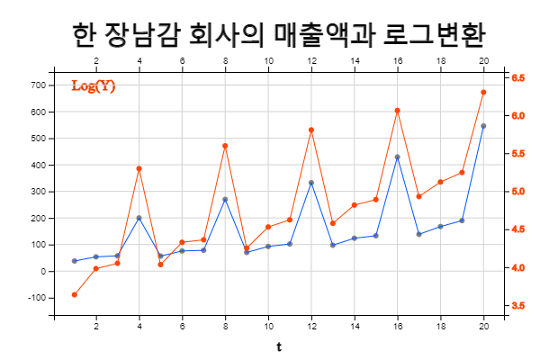
<그림 13.11> 한 장남감 회사의 매출액과 로그변환
제곱근 변환은 로그변환과 유사한 목적으로 사용되고 제곱 변환은 시간이 갈수록 분산성이 작아질 때 사용할 수 있다. 박스-콕스 변환은 일반적인 변환이다.
13.4 시계열예측: 회귀모형
시계열에서 지속적인 증가나 감소 경향을 나타내는 추세요인이 있을 경우 12장에서 배운 회귀모형을 적용시킬 수
있다. 예를 들어 시계열이 선형 추세를 보이는 경우 시계열을 확률변수 \(Y_1 , Y_2 , ... , Y_n\)의 관측값으로
하고 시간을 1, 2, ... , n으로 하여 선형회귀모형을 적용하면 다음과 같다.
$$
Y_t \,=\, \beta_0 \,+\, \beta_1 t \,+\, \epsilon_t
$$
여기서 \(\epsilon_t \)는 평균이 0이고 분산이 \(\sigma^2\)인 오차항이다. 선형모형의 특징은 시간이 지남에 따라 일정한
크기의 기울기 \(\beta_1\) 만큼 증가한다는 것이다.
추정된 회귀계수가 \(\beta_0 , \beta_1\)일 경우 선형회귀모형의 타당성 검정은 12장에서 설명한 방법과
동일하다. 추정의 표준오차(standard error of estimate)와 결정계수(coefficient of determination)가
많이 사용된다. 선형 추세모형에서 \(\sigma\)는 각 시점에서 추정 회귀선 주위에 관측값들이 흩어질 수
있는 정도를 나타낸다고 볼 수 있다. 이 \(\sigma\)의 추정값으로서 다음과 같은 표준오차가 이용된다.
$$
s \,=\, \sqrt { \frac{1} {n-2} \sum_{t=1}^n ( Y_t - {\hat Y}_t )^2 }
$$
표준오차 \(s\)의 값이 작으면 작을수록 관측값들이 추정 회귀직선에 근접해 있음을 나타내고, 이는 회귀직선
모형이 잘 적합됨을 의미한다.
결정계수(coefficient of determination)는 회귀제곱합 RSS가 총제곱합 TSS 중에서 설명된 제곱합의 비율이다.
$$
R^2 \,=\, \frac{RSS}{TSS}
$$
결정계수의 값은 항상 0 과 1 사이에 있고 그 값이 1 에 가까울수록 표본들이 회귀직선 주위에 밀집되어 있음을
뜻하며 이는 추정된 회귀식이 관측값들을 잘 설명하고 있다는 것을 의미한다.
12장에서 설명하였듯이 표준오차나 결정계수는 적합성 여부에 대한 절대적인 기준을 정하기가 힘들기 때문에
선형 추세모형의 적합성 여부는 추세 모수 \(\beta_1\)이 0 인지 아닌지에 대한 가설 검정을 이용한다.
\(\small \qquad \text{가설: } \qquad \qquad \,\, H_0 : \beta_1 = 0, H_1: \beta_1 \ne 0\)
\(\small \qquad \text{검정통계량:} \qquad t_{obs} = \frac {{\hat \beta}_1 } { SE ({{\hat \beta}_1 }) } \) ,
여기서 \(\small \;\; SE( \hat{ \beta_1} ) \,=\, \frac{ s} { \sqrt { \sum_{i=1}^ n (i - \overline t )^2 } } \)
\(\small \qquad \text{기각역:} \qquad \qquad If \,\; |t_{obs}| \,>\, t_{n-2,\alpha/2}, \,\, H_0 기각, \;\; \) 유의수준 \(\alpha\)
만일 귀무가설 \(H_0\)가 기각되지 못하면 모형은 타당하다고 볼 수 없다.
관측된 시계열 값과 예측값의 차이인 잔차를 이용하여 오차 \(\epsilon_t\) 에 대한 가정을 검정하는데 이를
잔차분석(residual analysis)이라 한다. 잔차분석은 보통 시간에 따른 잔차의 산점도, 또는 잔차와 예측값의
산점도를 그려봄으로써 오차들 간의 독립성과 등분산성 등 오차항에 대한 가정의 만족 여부를 검토를 한다.
산점도들에서 잔차들이 0을 중심으로 특정한 경향을 보이지 않고 랜덤하게 나타나면 각 가정이 타당함을 의미한다.
오차항의 정규성 가정을 검토하기 위해서는 잔차들의 정규확률도(normal probability plot)를 그려보아 그림
상의 점들이 직선의 형태를 나타내면 정규분포의 가정이 적합하다고 판단한다.
선형 회귀모형이 적합하다고 할 수 있을 경우 \(t_0\) 시점에서의 예측값
\({\hat Y}_{t_0} \,=\, {\hat \beta}_0 \,+\, {\hat \beta}_1 \cdot t_0 \)는 시점 \(t_0\)에서 확률변수
\({\hat Y}_{t_0}\)의 평균에 대한 점추정으로 해석할 수 있고 이때 \(Y_{t_0}\)의 평균에 대한 신뢰구간은
다음과 같다.
$$\small
{\hat Y}_{t_0} \,±\, t_{n-2,\alpha/2} \cdot SE ({\hat Y}_{t_0} ) \;\; 여기서 \;\, SE ( {\hat Y}_{t_0} ) \,=\, s \cdot \sqrt { \frac{1}{n} + \frac {(t_0 - \overline t )^2} { \sum_{i=1}^n (i - \overline t )^2 } }
$$
추세가 2차식, 3차식 또는 그 이상의 다항식 형태일 경우 다음과 같은 다중선형회귀모형을 가정할 수 있다.
\( \qquad \text{2차식} \qquad Y_t = \beta_0 + \beta_1 \cdot t + \beta_2 \cdot t^2 + \epsilon _t \)
\( \qquad \text{3차식} \qquad Y_t = \beta_0 + \beta_1 \cdot t + \beta_2 \cdot t^2 + \beta_3 \cdot t^3 + \epsilon _t \)
예측방법도 위의 단순 선형모형과 유사하다.
추세가 위와 같은 다항식 모형이 아닐 경우 다음과 같은 모형도 생각할 수 있다.
\( \qquad \text{제곱근} \qquad Y_t = \beta_0 + \beta_1 \cdot \sqrt{t} + \epsilon _t \)
\( \qquad \text{로그} \qquad \quad Y_t = \beta_0 + \beta_1 \cdot log(t) + \epsilon _t \)
이 모형들은 \(\sqrt{t}\)나 \(log(t)\)를 단순선형회귀모형의 독립변수 X로 바꾸면 선형회귀모형과 동일하고 예측방법도 유사하다.
이밖에 로그변환에 의해 선형회귀모형을 적용할 수 있는 함수 형태는 다음과 같다.
\( \qquad \text{멱함수} \qquad Y _{t} = \beta_{0} \cdot t ^{\beta _{1}} + \epsilon _{t} \)
\( \qquad \text{지수함수} \quad Y_t = \beta_0 \cdot e^ {( \beta_1 t)} + \epsilon _t \)
이 두 모형의 경우 비선형회귀모형으로 모수를 추정하여야 하나 오차항을 무시할 경우 근사적으로 다음과 같은 선형 모형으로 추정할 수 있다.
\( \qquad \text{멱함수} \qquad log(Y_{t}) = log(\beta_{0}) +{\beta _{1}} \cdot log(t) \)
\( \qquad \text{지수함수} \quad log(Y_t) = log(\beta_0) + \beta_1 \cdot t \)
1986년부터 2021년까지 우리나라 GDP가 [표 13.12]과 같다. <그림 13.12>는 이 데이터에 세 가지 회귀모형을
적용한 그림이다. 이 모형 중에서는 이차식 모형의 \(r^2\)값이 0.9591로 제일 커서 시계열에 제일 적합한
모형이라 할 수 있다. 하지만 추가로 모형의 타당성 겁정이 필요하다.
[표 13.12] 대한민국 GDP
| 연도 |
GDP (십억 $) |
1991
1992
1993
1994
1995
1996
1997
1998
1999
2000
2001
2002
2003
2004
2005
2006
2007
2008
2009
2010
2011
2012
2013
2014
2015
2016
2017
2018
2019
2020
|
330.65
355.53
392.67
463.62
566.58
610.17
569.76
383.33
497.51
576.18
547.66
627.25
702.72
793.18
934.9
1053.22
1172.61
1047.34
943.67
1143.98
1253.16
1278.43
1370.8
1484.32
1465.77
1499.36
1623.07
1725.37
1651.42
1638.26
|
[ : ]
<그림 13.12> 대한민국 GDP의 회귀모형
13.5 시계열예측: 지수평활모형
시계열이 추세 경향으로 움직일 때는 회귀모형으로 미래를 잘 예측할 수 있다. 그러나 시간별, 일별 등으로 역동적으로 움직이는 시계열을 예측하기는 적절하지 못할 수 있다. 이 경우 이동평균모형이나 지수평활모형을 이용할 수 있다. 시계열이 정상형인 경우와 선형추세인 경우로 나누어 설명한다.
[ : ]
13.5.1 정상형 시게열
시계열이 모든 시점에 대하여 평균, 분산 등 통계적 성질이 일정하면 이를 정상형 시계열
(stationary time series)이라고 한다. 현 시점 \(T\)까지의 시계열을 확률변수
\(Y_1 , Y_2 , ... , Y_T\)의 관측값이라 할 때 정상형 시계열은 일정한 값(constant) \(\mu \)주위에서
변하는 다음과 같은 모형이다.
$$
Y_i \;=\; \mu \;+\; \epsilon_i , \quad i=1,2,..., T
$$
여기서 \(\mu\)는 미지의 모수이고 \(\epsilon_i\)는 평균이 0이며 분산이 \(\sigma^2\)인 서로 독립인 오차항.
가. 단순이동평균모형
정상형 시계열모형에서 \(\mu\)의 추정값 \(\hat \mu\)는 자료의 평균이다. .
$$
{\hat \mu} \;=\; \frac{1}{T} \sum_{ i=1}^T Y_i
$$
이 모형을 이용한 현 시점 \(T\)에서 \(\tau\) 시점 후의 예측 (\({\hat Y}_{T+\tau}\)로 표시)은
$$
{\hat Y}_{T+\tau} \;=\; \hat \mu, \quad \tau=1,2,...
$$
이 되고 이를
단순평균모형(simple average model)이라 한다.
단순평균모형은 현재까지의 모든 관측값을 이용한다. 하지만 미지 모수 \(\mu\)는 시간에 따라 조금씩 이동할 수
있는데 예측을 위해서는 과거의 자료보다 최근의 자료에 더 가중을 두는 것이 합리적일 것이다. 만일 현 시점 \(T\)에서
최근 \(N\)개의 관측값에만 가중값 \(\frac{1}{N}\)을 주고 나머지 관측값에는 가중값을 0 으로 한다면 \(\mu\)의
추정값은 다음과 같다.
$$
{\hat \mu} \;=\; \frac{1}{N} \sum_{ i=T-N+1}^T Y_i \;=\; \frac{1}{N} ( Y_{T-N+1} + Y_{T-N+2} + \cdots + Y_T )
$$
이를 시점 \(T\)에서 \(N\)점 단순이동평균(single moving average)이라 하고 \(M_T\)로 표시한다.
\(N\)점 단순이동평균은 시점 \(T\)에 인접한 \(N\)개 관측값의 평균을 의미한다. \(Y_1, Y_2 , ... , Y_T\)는
가정에 의해 서로 독립이지만 \(M_1, M_2 , ... , M_T\)는 서로 독립이 아니고 상관이 되어 있다.
단순이동평균은 \(N\)의 크기에 따라 그 값이 달라지는데 \(N\)의 값이 크면 원 시계열의 변동에 둔감하게 되므로
서서히 변하고, \(N\)의 값이 작으면 변동에 민감하게 된다. 따라서 원 시계열의 변동이 작은 경우에는 \(N\)의 값을
크게 잡고 변동이 큰 경우에는 \(N\)의 값을 작게 잡는 것이 보통이다.
\(T\) 시점 에서 단순이동평균모형을 이용하여 \(T+\tau\) 시점의 예측값과 예측값의 평균 및 분산은 다음과 같다.
\(\qquad {\hat Y}_{T+\tau} \;=\; M_T , \quad \tau=1,2, ... \)
\(\qquad E( {\hat Y}_{T+\tau} ) \;=\; E(M_T ) \;=\; \mu \)
\(\qquad Var({\hat Y}_{T+\tau} )\;=\; Var(M_t ) \;=\; \frac{ \sigma ^2} {N } \)
단순이동평균모형을 이용하였을 경우 예측값에 대한 95% 신뢰도의 구간추정은 근사적으로 다음과 같다.
\(\qquad {\hat{Y}} _{T+ \tau } \;±\; 1.96 \sqrt {Var( {\hat{Y}} _{T+ \tau } )} \)
\(\qquad M_{T} \;±\; 1.96 \sqrt{ \frac{MSE} {N} } \)
한 가구회사의 최근 2년 동안의 월별 매출액이 [표 13.13]와 같고 6점 이동평균을 구하여 한 시점 후를 예측한 후
원자료와 예측값과의 잔차를 구하였다. 이에 대한 시계열 그림이 <그림 13.13>과 같다. 이 시계열은 대략
95를 기준으로 상․하로 변동하고 있는데 이와 같은 시계열을 정상형 시계열이라 한다.
\(N\) = 6인 경우 처음 5개 시점에 대한 이동평균은 구할 수 없다. 시점 6에서의 이동평균은
$$
M_6 \;=\; \frac{95+100+87+123+90+96} {6} \;=\; 98.50
$$
이 되므로 시점 6에서 한 시점 후의 예측은 \({\hat Y}_{6+1} = 98.50 \)이 된다. 따라서 이 예측값을 이용한 시점 7의 잔차는
$$
e_{7} \;=\; Y_{7} \;-\; {\hat{Y}}_{6+1} \;=\; 75-98.50 \;=\; -23.50
$$
이 된다. 같은 방법으로 나머지 시점의 이동평균과 한 시점 후의 예측값 그리고 잔차는 [표 13.13]과 같고, 따라서 평균제곱오차는 다음과 같다.
$$
{MSE} \;=\; \frac { \sum_{ i=7}^{ 24} ( Y_i \;-\; {\hat Y}_i )^{2} } {18} \;=\;331.22
$$
향후 3개월의 매출액은 제일 마지막 이동평균 \(M_{24}\)이고 예측값에 대한 95% 신뢰구간은 다음과 같다.
\(\qquad {\hat Y}_{24+1} \;=\; {\hat Y}_{24+2} \;=\; {\hat Y}_{24+3} \;=\; M_{24} \;=\; 104.67 \)
\(\qquad M_T \;±\; 1.96 \sqrt \frac{MSE}{N } \)
\(\qquad 104.67 \;±\; 1.96 \sqrt \frac{331.22}{6} \)
\(\qquad [90.10, 119.23] \)
[표 13.13] 어느 가구회사의 월별 매출액[과 6점 이동평균, 한 시점 후 예측 및 잔차
\(t\) |
매출액(백만$)
\(Y_t\) |
6점 이동평균
\(M_t\) |
한 시점 예측
\({\hat Y}_t\) |
잔차
\(e_t = Y_t - {\hat Y}_t\) |
1
2
3
4
5
6
7
8
9
10
11
12
13
14
15
16
17
18
19
20
21
22
23
24
|
95
100
87
123
90
96
75
78
106
104
89
83
118
86
86
112
85
101
135
120
76
115
90
92
|
98.50
95.17
91.50
94.67
91.50
91.33
89.17
96.34
97.67
94.34
95.67
95.00
98.00
100.84
106.50
104.84
105.34
106.17
104.67
|
98.50
95.17
91.50
94.67
91.50
91.33
89.17
96.34
97.67
94.34
95.67
95.00
98.00
100.84
106.50
104.84
105.34
106.17
|
-23.50
-17.17
14.50
9.33
-2.50
-8.33
28.83
-10.33
-11.67
17.67
-10.67
6.00
37.00
19.17
-30.50
10.17
-15.33
-14.17
|
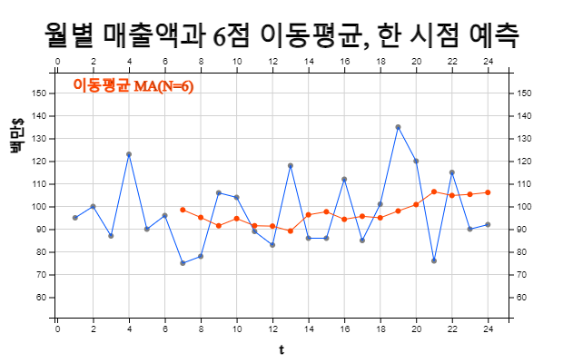
<그림 13.13> 가구회사의 월별 매출액과 6점 이동평균, 한 시점 예측
※ 초기 시점의 이동평균
\(N\)점 단순이동평균은 시점 \(N\) 이전까지는 구할 수 없어 예측모형이 적용될 수 없다. 시계열 자료가
많을 경우 큰 문제가 되지 않을 수 있지만, 자료의 수가 적을 때는 예측에 영향을 줄 수도 있다. 이와 같은
문제를 해결하기 위해 시점 \(N-1\) 까지는 다음과 같이 초기의 이동평균을 구하기도 한다.
\(\qquad t=1 \qquad \quad M_1 = Y_1 \)
\(\qquad t=2 \qquad \quad M_2 = \frac{Y_1 + Y_2 } {2} \)
\(\qquad \cdots \)
\(\qquad t=N-1 \quad M_{N-1} = \frac{Y_1 + Y_2 + \cdots + Y_{N-1} } {N - 1} \)
나. 단순지수평활모형
단순이동평균모형은 최근 \(N\)개의 관측값에 대하여만 동일한 가중값 을 부여하고 그 이전의 관측값들은
가중값을 0으로 하여 완전히 무시하였다.
단순지수평활모형(single exponential smoothing method)은
과거의 관측값으로 미래의 값을 예측할 때 모든 관측값에 가중값을 부여하되 최근의 자료에 더 많은 가중값을 주어
예측하는 방법으로 이동평균모형의 단점을 보완한 방법이다. 이 단순지수평활모형은 앞에서 연구한 지수평활방법의
값을 예측값으로 이용하는 것이다.
단순지수평활모형은 시점 \(t\)에서의 상수 \(\mu\)의 추정량 \({\hat \mu}_t \)를 바로 전 시점에서의 지수평활
추정량 \({\hat \mu}_{t-1} \)과 시점 \(t\)에서의 관찰값 \(Y_t\)의 가중평균을 구한 것이다. \(t\) 시점에서
지수평활 추정값을 \(S_t \;=\; {\hat \mu}_t \)라 하고 \(\alpha\)를 0과 1 사이의 실수라 할 때
단순지수평활값 \(S_t\)는 다음과 같이 정의된다.
\(\qquad S_1 \;=\; \alpha \;Y_1 \;+\; (1-\alpha) S_0 \)
\(\qquad S_2 \;=\; \alpha \;Y_2 \;+\; (1-\alpha) S_1 \)
\(\qquad \cdots \)
\(\qquad S_t \;=\; \alpha \;Y_t \;+\; (1-\alpha) S_{t-1} \)
여기서 \(\alpha\)를 평활상수(smoothing constant)라고 하는데 단순지수평활값 \(S_{t}\)는 가장 최근 관찰값
\(Y_y\)에 \(\alpha\)의 가중치를 주고, 시점 \(t-1\) 의 지수평활값 \(S_{t-1}\)에 (1-\(\alpha\))의 가중치를 주어
평균한 값이다. \(S_{t}\)에 관한 점화식을 다음과 같이 풀어서 적으면 지수평활의 의미를 더 잘 살펴볼 수 있다.
\(\qquad S_t \;=\; \alpha \;Y_t \;+\; (1-\alpha) S_{t-1} \)
\(\qquad \;=\; \alpha \; Y_t + (1- \alpha )\;( \alpha Y_{t-1} + (1- \alpha ) S_{t-2} ) \)
\(\qquad \;=\; \alpha Y_t + \alpha (1- \alpha ) Y_t-1 + (1- \alpha )^2 S_t-2 \)
\(\qquad \;=\; \alpha Y_t + \alpha (1- \alpha ) Y_t-1 + \alpha(1- \alpha )^2 Y_t-2 \;+\cdots\; + \alpha (1- \alpha )^{(t-1)} Y_1 +(1- \alpha )^t S_0 \)
즉, 단순지수평활값 \(S_t\)는 가장 최근 관찰값 \(Y_t\)에 \(\alpha\)의 가중치를 주고, 그 다음 최근 관찰값에는
\(\alpha(1-\alpha)\), 그 다음은 \(\alpha(1-\alpha)^2\) 등 점차로 적은 가중값을 주게 된다. 따라서 \(\alpha\)의
크기가 작으면 현재의 관찰값에 가중치를 작게 주어 지수평활값은 시계열의 변동에 둔감하고, \(\alpha\)의 크기가
크면 현재의 관찰값에 가중치를 많이 줌으로서 원래의 시계열에 민감하게 반응한다. \(\alpha\)의 값으로는
일반적으로 0.1에서 0.3 사이의 값이 많이 이용된다.
단순지수평활값을 구하기 위해서는 초기평활값 \(S_0\)가 필요한데 최초의 관찰값, 또는 초기 몇 개 자료의
표본평균이나 전체 표본평균 등을 이용한다. 지수평활법은 평활상수의 선택이 임의적이며 예측구간을 구하기 어렵지만
이상점이나 개입(intervention)이 존재할 경우 ARIMA 모형보다 덜 영향을 받고, 사용하기 쉽다는 장점이 있다.
시점 \(T\) 에서 단순지수평활모형을 이용한 \(T+\tau\) 시점의 예측값과 예측값의 평균 및 분산은 다음과 같다.
\(\qquad {\hat Y}_{T+\tau} \;=\;S_T \)
\(\qquad E( {\hat Y}_{T+\tau} )\;=\;E(S_T )\;=\; \mu \)
\(\qquad Var( {\hat{Y}}_{T+ \tau } )\;=\; Var(S_{T} )\;=\; \frac{\alpha } {2- \alpha } \sigma^{2} \)
따라서 단순지수평활모형을 이용하였을 경우 예측값에 대한 95% 신뢰도의 구간추정은 근사적으로 다음과 같다.
\(\qquad {\hat Y}_{T+\tau} \;±\; 1.96 \sqrt { Var ({\hat Y}_{T+\tau})} \)
\(\qquad S_{T} \;±\;1.96\; \sqrt { \frac{\alpha } {2- \alpha } MSE} \)
[표 13.13] 자료에 대해 평활상수 \(\alpha\) = 0.1 인 단순지수평활모형을 적용하여 향후 3개월의 매출액을 예측하자.
지수평활의 초기값 \(S_0 \)는 첫 번째 관측값을 이용하자. 초기값 \(S_0 = Y_1 = 95\) 로 하여 처음 세 개의 시계열에
대해 지수평활값을 구하면 다음과 같다.
\(\qquad S_{1} \;=\;0.1\; \times \;Y _{1} \;+\;(1-0.1\;)\; \times \;S _{0} \;=\;\;0.1\; \times \;95\;+\;0.9\; \times \;95\;=\;95 \)
\(\qquad S_{2} \;=\;0.1\; \times\;Y_2 \;+\; (1-0.1\;)\;\times\; S_1 \;=\; \;0.1\;\times\;100\;+\;0.9 \;\times \;95 \;=\; 95.50 \)
\(\qquad S_{3} \;=\;0.1\; \times \;Y _{3} \;+\;(1-0.1\;)\; \times \;S _{2} \;=\;\;0.1\; \times \;87\;+\;0.9\; \times \;95.5\;=\;94.65 \)
\(\qquad \cdots \)
각 시점에서 한 시점 후의 예측은 다음과 같다.
\(\qquad {\hat Y}_{0+1} \;=\; S_0 \;=\;95.00 \)
\(\qquad {\hat Y}_{1+1} \;=\; S_1 \;=\;95.00 \)
\(\qquad {\hat Y}_{2+1} \;=\; S_2 \;=\;95.50 \)
따라서 이 예측값을 이용한 잔차는 다음과 같다.
\(\qquad e_1 \;=\; Y_1\;-\;{\hat Y}_{0+1} \;=\; 95.00 - 95.00 \;=\; 0 \)
\(\qquad e_2 \;=\; Y_2\;-\;{\hat Y}_{1+1} \;=\; 100.00 - 95.00 \;=\; 5.00 \)
\(\qquad e_3 \;=\; Y_3\;-\;{\hat Y}_{2+1} \;=\; 87.00-95.50\;=\;-8.50 \)
같은 방법으로 나머지 시점의 단순지수평활과 한 시점 후의 예측값 그리고 잔차는 [표 13.14]와 같다. 따라서 평균제곱오차는 다음과 같다.
\(\qquad {MSE} \;= \; \frac{1}{24} \sum_{i=1}^{24} \; ( Y_i \;-{\hat Y}_i )^{2} \;=\;269.72 \)
평균제곱오차의 관점으로 보면 6점 단순이동평균모형의 MSE가 331.22 이므로 지수평활모형이 더 나은 적합성을 모인다고 말 할 수 있다.
향후 3개월의 매출액은 제일 마지막 이동평균 \(S_24\)이고 예측값에 대한 95% 신뢰구간은 다음과 같다.
\(\qquad {\hat Y}_{24+1} \;=\; {\hat Y}_{24+2} \;=\; {\hat Y}_{24+3} \;=\; S_{24} \;=\; 98.66 \)
\(\qquad S_{T} \;±\; 1.96\; \sqrt { \frac{\alpha } {2- \alpha} } MSE \)
\(\qquad 98.66 \;±\; 1.96 \; \sqrt { \frac{0.1} {2-0.1} 269.72 } \)
\(\qquad [65.27, 132.05] \)
[표 13.14]는 이상의 식을 정리한 것이고 <그림 13.14>는 \(\alpha\) = 0.1 인 단순지수평활모형을 이용한
한 시점 후의 예측과 향후 3개월의 예측에 대한 그림이다.
[표 13.14] α = 0.1 인 단순지수평활과 한 시점 후의 예측, 잔차
\(t\) |
매출액(백만$)
\(Y_t\) |
지수평활
\(S_t\) |
한 시점 예측
\({\hat Y}_t\) |
잔차
\(e_t = Y_t - {\hat Y}_t\) |
1
2
3
4
5
6
7
8
9
10
11
12
13
14
15
16
17
18
19
20
21
22
23
24
|
95
100
87
123
90
96
75
78
106
104
89
83
118
86
86
112
85
101
135
120
76
115
90
92
|
95.00
95.50
94.65
97.48
96.74
96.66
94.50
92.85
94.16
95.15
94.53
93.38
95.84
94.86
93.97
95.77
94.70
95.33
99.29
101.36
98.83
100.45
99.40
98.66
|
95.00
95.00
95.50
94.65
97.48
96.74
96.66
94.50
92.85
94.16
95.15
94.53
93.38
95.84
94.86
93.97
95.77
94.70
95.33
99.29
101.36
98.83
100.45
99.40
|
0.00
5.00
-8.50
28.35
-7.48
-0.74
-21.66
-16.50
13.15
9.84
-6.15
-11.53
24.62
-9.84
-8.86
18.03
-10.77
6.30
39.67
20.71
-25.36
16.17
-10.45
-7.40
|
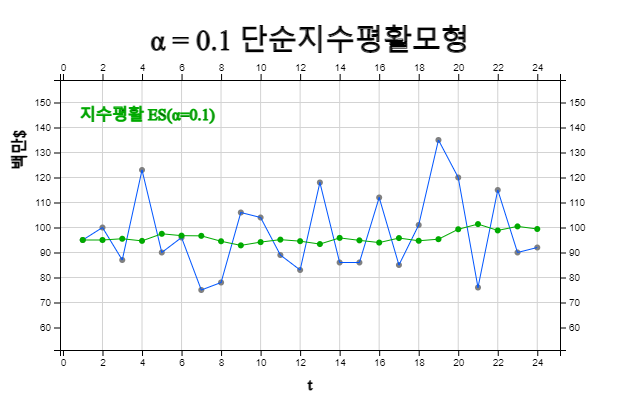
<그림 13.14> α = 0.1 단순지수평활모형을 이용한 한 시점 후의 예측
※ 지수평활의 초기값
시점 \(t=1\)에서의 초기 지수평활값 \(S_0\)는 구할 수 없으므로 대개 다음 세 가지 방법이 많이 이용된다.
1) 최초의 관찰값, 즉, \(\qquad S_0 \;=\; Y_1\)
2) 초기 \(n\)개의 관측값을 이용한 부분평균, 즉, \(\qquad S_0 \;=\; \frac{1}{n} ({Y_1 + Y_2 + \cdots + Y_n }) \)
3) 전체 \(T\) 시점까지의 평균, 즉, \(\qquad S_0 \;=\; \frac{1}{T} ({Y_1 + Y_2 + \cdots + Y_T }) \)
※ 초기 평활상수
모든 시계열에 대해 같은 평활상수 \(\alpha\)를 적용할 수도 있으나 초기값 \(S_0\)의 영향을 줄이기 위해 다음과 같은
방법이 이용되기도 한다.
\(\qquad \alpha_t \;=\; \frac{1}{t} , \quad \; \alpha_t \;\) 가 \(\; \alpha \) 될 때 까지
13.5.2 선형 시계열
가. 이중이동평균
전 절에서 정상형 시계열인 경우 단순이동평균모형을 적용할 수 있음을 살펴보았다. 만일 선형추세를 갖는
시계열에 이동평균모형을 적용하면 어떻게 될까? 즉 선형 추세를 갖는 시계열
\(Y_t \;=\; \beta_0 \;+\; \beta_1 \cdot t \;+\; \epsilon _t \) 에 대해 \(T\) 시점에서의 N점 단순이동평균
$$
M_T \;= \; \frac{1}{N} ( Y_{T-N+1} \;+\; Y_{T-N+2} \;+\; \cdots \;+\; Y_T )
$$
을 계산하여 기대값을 계산하면 다음과 같음을 보일 수 있다.
$$
E(M_T) \;=\; \beta_0 + \beta_1 T - \frac{N-1} {2} \beta_1
$$
즉, 선형추세 모형인 경우에 단순이동평균 \(M_t\)는 \(\frac{N-1}{2} \beta_1 \) 만큼의 편향(bias)되어 있음을
알 수 있다. 예를 들어 [표 13.10]의 선형추세를 갖는 소비자 물가지수에 대해 5점 단순이동평균 를 이용하여 한 시점
후를 예측하면 *lt;그림 13.15>와 같다. \(M_t\)를 이용한 예측값이 원래 시계열의 추세보다 항상 떨어져 있음을
알 수 있다.
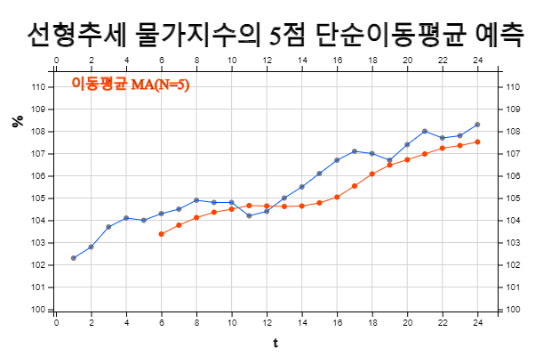
<그림 13.15> 선형추세를 갖는 소비자 물가지수에 대해 5점 단순이동평균 예측
선형추세인 경우 단순이동평균모형의 편향을 없애기 위한 한 가지 방법이 단순이동평균에 대해 다시 이동평균을 구하는
이중이동평균(double moving average)이다. \(T\) 시점에서의 \(N\)점 이중이동평균
\(M_T^{(2)}\)와 그 기댓값은 다음과 같다.
$$
\begin{align}
M_T^{(2)} &\;=\; \frac{1}{N} (M_T \;+\; M_{T-1} \;+\; \cdots \;+\; M_{T-N+1}) \\
E(M_T^{(2)}) &\;=\; \beta_0 \;+\; \beta_1 T \;-\; (N-1) \beta_1
\end{align}
$$
\(E(M_T )\)와 \(E(M_T ^{(2)} )\)는 같은 개수의 모수를 가지고 있으므로 두 식을 연립하여
\(\beta_0 ,\;\beta_1 \)의 추정량을 구하면 다음과 같다.
$$
\begin{align}
{\hat{\beta }}_{1} &\;=\; \frac{2}{N-1} \; (M_{T} \;-\; M_{T}^{(2)} ) \\
{\hat{\beta }}_{0} &\;=\; 2M_{T} \;-\; M_{T}^{(2)} \;-\; {\hat{\beta }}_{1} \;T\;
\end{align}
$$
그러므로,\(T\) 시점에서 이중이동평균을 이용한 \(T+\tau\) 시점의 예측값은 다음과 같다.
$$
{\hat Y}_{T+\tau} \;=\; 2 M_T \;-\; {M_T ^{(2)}} \;+\; \tau \;\; (\frac {2}{N-1} ) \;\; (M_T\;-\; M_T^{(2)})
$$
이와 같은 이중이동평균모형은 일종의 직관적인(heuristic) 방법이라 할 수 있다. 즉, 논리적이기는 하나 최소제곱법과 같은 어떠한 최적화에 근거한 방법은 아니다. 하지만 근사적으로 최소제곱법에 의해 설명될 수도 있는데 이 책에서는 생략하기로 한다.
[표 13.15]는 5점 이중이동평균모형으로 소비자물가지수 예측을 위한 계산표이다. 세 번째 열이 5점 단순이동평균
\(M_T\) 인데 시점 1에서 4까지는 단순이동평균을 계산할 수 없음에 주목하라. 네 번째 열은 5점 이중이동평균
\(M_t^{(2)}\)를 계산한 것인데 단순이동평균이 5개가 계산될 때까지, 즉 시점 1에서 8까지는 이중이동평균을
계산할 수 없다. \(M_9\)와 \(M_9^{(2)}\)를 이용하여 시점 9에서 1시점 후의 예측 \({\hat Y}_{9+1}\)을 구하면 다음과 같다.
$$
\begin{align}
{\hat Y}_{9+1} &\;=\; 2M_9 \;- M_9^{(2)} \;+ 1 \;\; (\frac{2}{5-1}) \;\;(M_9\;-\;M_9 ^{(2)}) \\
&\;=\; 2 \times 104.50\;-104.028\;+1\;\; ( \frac{2}{5-1} ) \;\;(104.50\;-104.028)\;=\;105.2080
\end{align}
$$
같은 방법으로 계산된 예측값이 다섯 번째 열에 표시되어 있다.
[표 13.15] 이중이동평균모형을 이용한 소비자물가지수의 예측
\(t\) |
물가지수
\(Y_t\) |
5점 단순이동평균
\( M_t\) |
5점 이중이동평균
\( M_t ^(2)\) |
한 시점 예측\({\hat Y}_{(t-1)+1}\) |
1
2
3
4
5
6
7
8
9
10
11
12
13
14
15
16
17
18
19
20
21
22
23
24
|
102.3
102.8
103.7
104.1
104.0
104.3
104.5
104.9
104.8
104.8
104.2
104.4
105.0
105.5
106.1
106.7
107.1
107.0
106.7
107.4
108.0
107.7
107.8
108.3
|
103.38
103.78
104.12
104.36
104.50
104.66
104.64
104.62
104.64
104.78
105.04
105.54
106.08
106.48
106.72
106.98
107.24
107.36
107.52
107.84
|
104.028
104.284
104.456
104.556
104.612
104.668
104.744
104.924
105.216
105.584
105.972
106.36
106.70
106.956
107.164
107.388
|
105.2080
105.2240
104.9160
104.7160
104.6820
104.9480
105.4840
106.4640
107.3760
107.8240
107.8420
107.9100
108.0500
107.9660
108.0540
|
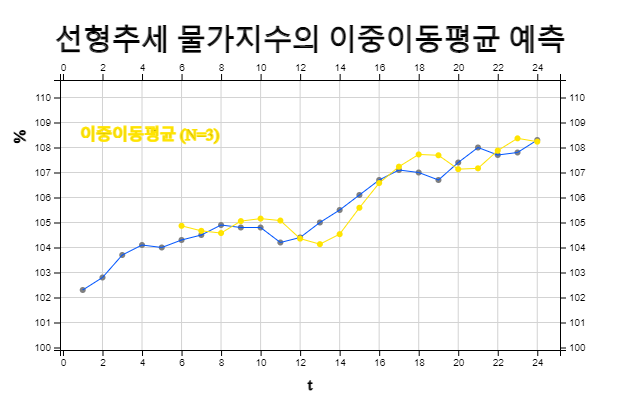
<그림 13.16> 이중 이동평균모형을 이용한 소비자물가지수의 예측
나. 홀트의 이중지수평활모형
홀트(Holt)는 선형추세를 갖는 시계열 \(Y_t \;=\; \beta_0 \;+\; \beta_1 \cdot t \;+\; \epsilon_t \) 에
대해 수평계수 \(\beta_0\)와 추세계수 \(\beta_1\) 각각에 대해 평활상수를 이용하는 모형을 제안하였다. 이를
홀트의 선형추세 지수평활모형(linear trend exponential smoothing model) 또는
2모수 이중지수평활모형이라 한다. \({\hat b}_0 \)와 \({\hat b}_1 \)을 수평계수와 추세계수의 초기값이라 하고,
수평계수의 평활상수를 \(\alpha\), 추세계수에 관한 평활상수를 \(\gamma\)라 할 때 홀트 추세 지수평활모형을
이용한 각 시점에서의 예측값 \({\hat Y}_t\), 수평계수 \({\hat \beta}_0 (t)\)와
추세계수(\({\hat \beta}_1 (t)\))의 예측은 다음과 같다.
$$
\begin{align}
& \text{예측값:} \qquad\quad {\hat Y}_t \;=\; {\hat \beta}_0 (t-1) + {\hat \beta}_1 (t-1) \\
& \text{수평계수:} \qquad {\hat \beta}_{0}(t) \;=\; \alpha Y_t + (1-\alpha) {\hat Y}_t \\
& \text{추세계수:} \qquad {\hat \beta}_{1}(t) \;=\; {\gamma} \{ {\hat \beta}_0 (t) - {\hat \beta}_0 (t-1) \} + (1-\gamma) {\hat \beta}_1 (t-1)
\end{align}
$$
즉 수평계수는 현재의 관측값 \(Y_t\)와 예측값 \({\hat Y}_t\)의 가중평균이고, 추세계수는 시점 \(t\)와
\((t-1)\)사이의 수평계수차 \({\hat \beta}_0 (t) - {\hat \beta}_0 (t-1) \) 와 \((t-1)\) 시점에서의
추세계수 \({\hat \beta}_1 (t-1) \)의 가중평균을 구한 것이다. 이 모형을 위해서는 수평계수와 추세계수의
초기값 \({\hat \beta}_0 (0) \)와 \({\hat \beta}_1 (0) \)가 필요한데 관측값들의 단순회귀분석으로
예측하는 방법이 많이 이용된다. 평활상수 \(\alpha\)와 \(\gamma\)의 결정은 단순지수평활모형과 마찬가지로
0.1에서 0.3 사이의 값이 많이 이용된다.
\(T\)시점에서 홀트 이중지수평활모형을 이용한 \(T+\tau\) 시점의 예측값은 다음과 같다.
$$
{\hat Y}_{T+\tau} \;=\; {\hat Y}_T + \tau {\hat \beta}_1 (T)
$$
이와 같은 추세 지수평활모형도 역시 일종의 직관적인(heuristic) 방법이라 할 수 있다. 즉, 논리적이기는 하나 최소제곱법과 같은 어떠한 최적화에 근거한 방법은 아니다.
[표 13.15]]의 자료에 대해 단순선형회귀모형을 적용하면 다음과 같다.
$$
{\hat{Y}}_{t} =102.574 \;+\; 0.2344 \;\;t
$$
즉 \({\hat \beta}_0 (0) \) = 102.574 이고 \({\hat \beta}_1 (0) \) = 0.2344 이다. [표 13.16]은
이 초기치를 이용하여 홀트 이중지수평활모형으로 소비자 물가지수 예측을 위한 계산표이다. 세 번째 열이
수평계수 \({\hat \beta}_0 (t) \)의 예측값이고, 네 번째 열은 추세계수 \({\hat \beta}_1 (t) \),
다섯 번째 열은 각 시점 에서 1시점 후의 예측 \({\hat Y}_t = {\hat \beta}_0 (t-1) + {\hat \beta}_1 (t-1)\)을
구한 것이다. 따라서 향후 3개월의 소비자 물가지수의 예측은 다음과 같다.
$$
\begin{align}
& t=25 \qquad {\hat{Y}} _{24+1} \;=\; {\hat{Y}} _{24} \;+\; 1\; \times {\hat{\beta}} _{1} (24)\;=\;108.19 +0.237\;=\;108.42 \\
& t=26 \qquad {\hat{Y}} _{24+2} \;=\; {\hat{Y}} _{24} \;+\; 2\; \times {\hat{\beta}} _{1} (24)\;=\;108.19 + 2 \times0.237\;=\;108.66 \\
& t=27 \qquad {\hat{Y}} _{24+3} \;=\; {\hat{Y}} _{24} \;+\; 3\; \times {\hat{\beta}} _{1} (24)\;=\;108.19 + 3 \times0.237\;=\;108.90
\end{align}
$$
[표 13.16] 홀트 이중지수평활모형을 이용한 물가지수의 예측
\(t\) |
물가지수
\(Y_t\) |
수평계수
\( {\hat \beta}_0 (t)\) |
추세계수
\( {\hat \beta}_1 (t)\) |
한 시점 예측\({\hat Y}_{(t-1)+1}\) |
0
1
2
3
4
5
6
7
8
9
10
11
12
13
14
15
16
17
18
19
20
21
22
23
24
|
102.3
102.8
103.7
104.1
104.0
104.3
104.5
104.9
104.8
104.8
104.2
104.4
105.0
105.5
106.1
106.7
107.1
107.0
106.7
107.4
108.0
107.7
107.8
108.3
|
102.57
102.76
102.97
103.25
103.54
103.80
104.07
104.33
104.61
104.85
105.07
105.20
105.33
105.50
105.70
105.93
106.20
106.49
106.75
106.96
107.21
107.50
107.73
107.95
108.20
|
0.234
0.229
0.227
0.232
0.239
0.241
0.243
0.245
0.249
0.248
0.245
0.234
0.224
0.218
0.216
0.218
0.223
0.230
0.233
0.230
0.232
0.238
0.237
0.236
0.237
|
102.81
102.99
103.20
103.48
103.78
104.04
104.31
104.58
104.86
105.10
105.31
105.44
105.56
105.72
105.91
106.15
106.43
106.72
106.98
107.19
107.44
107.73
107.97
108.19
|
<그림 13.17>은 홀트 이중지수평활모형을 이용한 예측값을 보여주고 있다.
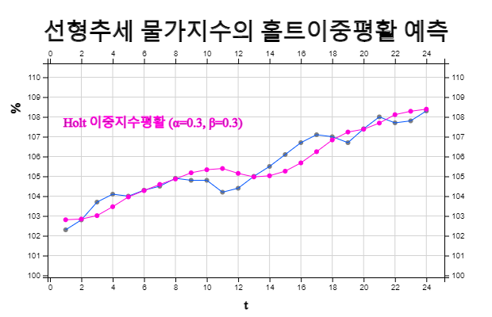
<그림 13.17> 홀트 이중지수평활모형을 이용한 물가지수의 예측
13.6 시계열예측: 계절모형
계절형 시계열모형으로 중심이동평균을 이용하는 승법모형과 홀트-윈터스(Holt-Winters)의 모형을 소개한다.
13.6.1 승법계절모형
계절주기가 \(L\)인 시계열 \(Y_t\)가 추세(\(T\)), 계절(\(S\)) 요인 및 불규칙성분(\(I\))의 곱으로 표현될 수
있다고 가정하자. 즉,
$$
Y_t \;=\; T_t \cdot S_t \cdot I_t
$$
이동평균비율모형(ratio to moving average method)은 계절성분을 구하기 위하여 추세와 불규칙성분을
제거하는 방법으로 다음과 같이 구한다.
(단계 1) 시계열에 대하여 계절주기와 같은 \(L\)점 중심이동평균을 구한다. 이 중심이동평균은 시계열에서
계절성분과 불규칙성분이 제거된 추세 성분 \(T_t\)을 나타낸다고 볼 수 있다.
(단계 2) 시계열 \(Y_t\)를 단계 1에서 구한 추세 성분 \(T_t\)으로 나누어 준다. 이 값은 계절성분과
불규칙 성분 \({S_t \cdot I_t}\)을 의미하는 것으로 계절비율이라 한다. 즉,
$$
\frac{Y_t} {T_t } \;=\; S_t \cdot I_t
$$
(단계 3) 단계 2에서 구한 계절비율에 대해 각 계절별로 평균(또는 절사평균)을 구하면 계절지수 \(S_t\)를
구하게 된다. 이때 계절지수의 합이 \(L\)이 되도록 정규화를 해 주어야 한다.
이와 같이 계절지수를 구한 후 원 시계열 자료를 계절지수로 나누어 주면
비계절화 시계열(deseasonal time series) \(D_t\)가 된다.
\( \qquad \text{비계절화 시계열:} \qquad D_t \;=\; \frac{Y_t} {S_t } = T \cdot I \)
이 비계절화 시계열 \(D_t\)는 \(T \cdot I\)를 의미하는데 이에 대해 적절한 모형을 이용하여 미래를 예측한 후
여기에 해당 계절지수를 곱하여 주면 원하는 계절의 예측값을 구할 수 있다.
[표 13.17]은 한 회사의 분기별 매출액이다. 계절주기가 4이므로 4점 중심화이동평균을 구하면 표의 4열과 같다. 원래의 시계열을 4점 중심화이동평균으로 나누어 주면 5열의 계절비율을 계산할 수 있다. 즉,
$$
\frac{Y_t} {T_t } \;=\; S_t \cdot I_t
$$
[표 13.17] 한 회사의 분기별 매출액의 비계절화 자료
|
①
연도-분기 |
②
매출액
|
③
4점 MA |
④
4점 중심MA |
⑤
계절비율 |
⑥
비계절자료\(D_t\) |
1
2
3
4
5
6
7
8
9
10
11
12
13
14
15
16
|
2018-1분기
2018-2분기
2018-3분기
2018-4분기
2019-1분기
2019-2분기
2019-3분기
2019-4분기
2020-1분기
2020-2분기
2020-3분기
2020-4분기
2021-1분기
2021-2분기
2021-3분기
2021-4분기
|
75
60
54
59
86
65
63
80
90
72
66
85
100
78
72
93
|
62.000
64.750
66.000
68.250
73.500
74.500
76.250
77.000
78.250
80.750
82.250
83.750
85.750
|
63.375
65.375
67.125
70.875
74.000
75.375
76.625
77.625
79.500
81.500
83.000
84.750
|
0.852
0.902
1.281
0.917
0.851
1.061
1.175
0.928
0.830
1.043
1.205
0.920
|
61.292
64.915
63.759
58.700
70.281
70.324
74.385
79.593
73.550
77.898
77.928
84.567
81.722
84.389
85.012
92.527
|
5열의 계절비율을 연도별, 분기별로 정리한 것이 [표 13.18]인데 각 분기별로 최대값과 최소값을 제거하고
평균(절사평균)을 구하면 6열과 같다. 이 값들의 합이 4.0197 이므로 절사평균 계절비율을 정규화한 계절지수가
7열과 같다. 즉,
$$
{\hat S}_1 \;=\; 1.1991,\quad {\hat S}_2 \;=\; 0.9159,\quad {\hat S}_3 \;=\; 0.8472,\quad {\hat S}_4 \;=\; 1.0378
$$
[표 13.18] 계절지수의 계산
①
연도
분기 |
②
2018 |
③
2019 |
④
2020 |
⑤
2021 |
⑥
절사평균 |
⑦
계절지수
\(s_t\) |
1분기
2분기
3분기
4분기
|
0.852
0.902
|
1.281
0.917
0.851
1.061
|
1.175
0.928
0.830
1.043
|
1.205
0.920
|
1.2050
0.9204
0.8514
1.0429
|
1.1991
0.9159
0.8472
1.0378
|
|
|
|
|
합계 |
4.0197 |
|
원래의 자료를 각 분기의 계절지수로 나눈 비계절화 자료 \(D_t\)는 [표 13.17]의 6열과 같다. 이 비계절화
자료의 선형 회귀직선을 구하면 다음과 같다 (<그림 13.18>).
$$
D_{t} \;=\; 61.2000 \;+\; 1.6088 \cdot t
$$
따라서 향후 1년간의 예측은 다음과 같다.
$$
\begin{align}
& \text{시점 17 :} \quad{\hat Y}_{17} \;=\; (61.2000 \;+\; 1.6088 \times 17) \times 1.1991 \;=\; 108.354 \\
& \text{시점 18 :} \quad{\hat Y}_{18} \;=\; (61.2000 \;+\; 1.6088 \times 18) \times 0.9159 \;=\; 83.332 \\
& \text{시점 19 :} \quad{\hat Y}_{19} \;=\; (61.2000 \;+\; 1.6088 \times 19) \times 0.8472 \;=\; 77.721 \\
& \text{시점 20 :} \quad{\hat Y}_{20} \;=\; (61.2000 \;+\; 1.6088 \times 20) \times 1.0378 \;=\; 93.853 \\
\end{align}
$$
<그림 13.19>는 계절 예측값의 그래프이다.
[ : ]
Y = () × () × ()
<그림 13.18> 비계절시계열에 대한 매출액에 대한 선형 회귀모형예측
13.6.2 홀트-윈터스 계절모형
계절주기가 \(L\)인 시계열이 다음과 같이 \(m\)주기에 걸쳐 관측되었다고 하자.
|
계절 1 |
계절 2 |
\(\cdots\) |
계절 \(L\) |
주기 1
주기 2
\(\cdots\)
주기 \(m\)
|
\(Y_{1}\)
\(Y_{L+1}\)
\(\cdots\)
\(Y_{(m-1)L+1}\)
|
\(Y_{2}\)
\(Y_{L+2}\)
\(\cdots\)
\(Y_{(m-1)L+2}\)
|
\(\cdots\)
\(\cdots\)
\(\cdots\)
\(\cdots\)
|
\(Y_{L}\)
\(Y_{2L}\)
\(\cdots\)
\(Y_{mL}\)
|
홀트-윈터즈(Holt-Winters) 계절모형은 앞에서 연구한 홀트의 선형 이중지수평활방법을 계절모형으로
확장한 것으로 수평성분 \(l_t\), 추세성분 \(b_t\), 계절성분 \(s_t\)로 이루어져 있다. 덧셈모형과
곱셈모형이 있는데 여기서는 곱셈모형을 소개한다.
$$
\begin{align}
{\hat{Y}}_{t+h} &\;=\; (l_{t} \;+\; h \cdot b_{t} ) \cdot s_{t+h-m(k+1)} \\
l_{t} &\;=\; \alpha \frac{y_t}{s_{t-m} } + (1-\alpha)(l_{t-1} + b_{t-1} ) \\
b_{t} &\;=\; \beta (l_{t} - l_{t-1} )+(1- \beta ) b_{t-1} \\
s_{t} &\;=\; \gamma \;\; \frac{y_{t}}{l_{t-1} + b_{t-1}} \;+\; (1- \gamma ) s_{t-m}
\end{align}
$$
여기서 \(k\)는 \((h-1)/m\)의 정수부분이다. \(l_t\)는 시계열 수평성분(level)으로서 계절성을 제거한 현재
수평성분 (\( \frac{y_t}{s_{t-m} } \) )과 한 시점 전에서 예측한 수평성분값 \((l_{t-1} + b_{t-1} ) \)의
지수평활을 의미한다. \(b_t\)는 추세성분으로서 현 시점 추세성분 \( (l_t - l_{t-1} )\)와 전 시점의 추세성분
(\(b_{t-1}\))를 지수평활을 한다. \(s_t\)는 계절성분으로서 현시점의 계절성분
(\(\frac {y_t}{l_{t-1} + b_{t-1} } \))과 한 계절 전 시즌의 계절성분 \(s_{t-m}\)을 지수평활한다.
[표 13.19]는 한 회사의 분기별 매출액을 α = 0.3, β = 0.3, γ = 0.3 으로 하여 홀트-윈터스
모형으로 수평성분, 추세성분, 계절지수의 지수평활값을 계산한 후 제일 마지막 열에 한 시점 후의 예측
\({\hat Y}_{(t-1)+1}\)을 한 것이다.
여기서 \(l_0\)와 \(b_0\) 초기값은 자료에 대한 선형회귀모형의 절편과 추세성분이고 계절지수 초기값은
\(Y \;=\; T \times S \times I \) 모형의 계절지수를 이용하였다.
[표 13.19] 한 회사의 분기별 매출액에 대한 홀트-윈터스 계절모형 예측
| t |
연도 분기 |
매출액
\(Y_t\) |
수평
\(l_t\) |
추세
\(b_t\) |
계절
\(s_t\) |
한 시점 예측
\(\hat Y _{(t-1)+1}\) |
-3
-2
-1
0
1
2
3
4
5
6
7
8
9
10
11
12
13
14
15
16
|
2018-1분기
2018-2분기
2018-3분기
2018-4분기
2019-1분기
2019-2분기
2019-3분기
2019-4분기
2020-1분기
2020-2분기
2020-3분기
2020-4분기
2021-1분기
2021-2분기
2021-3분기
2021-4분기
|
61.2
62.7312
64.6753
65.5795
63.9809
66.7081
68.7061
71.6766
75.7320
76.5997
78.2283
79.2477
81.6382
83.21580
84.7427
86.0501
88.4618
|
1.61
1.5863
1.6937
1.4568
0.5402
1.1963
1.4368
1.8969
2.5445
2.0414
1.9176
1.6481
1.8708
1.7829
1.7061
1.5865
1.8341
|
1.61
1.5863
1.6937
1.4568
0.5402
1.1963
1.4368
1.8969
2.5445
2.0414
1.9176
1.6481
1.8708
1.7829
1.7061
1.5865
1.8341
|
1.1991
0.9159
0.8472
1.0378
1.1976
0.9210
0.8371
0.9905
1.2382
0.9319
0.8555
1.0195
1.2117
0.9270
0.8459
1.0289
1.2074
0.9242
0.8420
1.0386
|
75.315
58.908
56.230
69.570
77.270
62.539
58.720
72.874
96.920
73.282
68.561
82.477
01.184
78.791
73.124
90.169
|
<그림 13.19>는 향후 1년의 홀트-윈터스 예측값으로 다음과 같이 계산된다.
$$
\begin{align}
& \text{시점 17 :} \quad {\hat Y}_{16+1} \;=\;\; (l_{16} + 1 \times\;b_{16} ) \cdot s_{13} \;=\;(88.4618 + 1.8341)\times1.2074 \;=\;109.024 \\
& \text{시점 18 :} \quad {\hat Y}_{16+2} \;=\;\; (l_{16} + 2 \times\;b_{16} ) \cdot s_{14} \;=\;(88.4618+2 \times 1.8341) \times 0.9242\;=\;85.144 \\
& \text{시점 19 :} \quad {\hat Y}_{16+3} \;=\;\; (l_{16} + 3 \times\;b_{16} ) \cdot s_{15} \;=\;(88.4618+3 \times 1.8341) \times 0.9420\;=\;79.115 \\
& \text{시점 20 :} \quad {\hat Y}_{16+4} \;=\;\; (l_{16} + 4 \times\;b_{16} ) \cdot s_{16} \;=\;(88.4618+4 \times 1.8341) \times 1.0386\;=\;99.495 \\
\end{align}
$$
[ : ]
Y(t+h) = (L(t) + h × b(t)) × S(t+h-m(k+1))
<그림 13.19> 한 회사의 분기별 매출액에 대한 홀트-윈터스 계절모형 예측
연습문제
다음 연습문제(13.1 – 13.4) 시계열 자료를 그래프로 나타내고 적절한 평활법과 변환을 적용한 후 적젛한 예측모형을 찾아 다음 연도를 예측하라.
13.1 다음 표는 한 제조회사의 2001 - 2014년 동안 선적시에 손상된 품목들의 개수에 대한 자료이다.
| 연도 |
항목 |
2001
2002
2003
2004
2005
2006
2007
2008
2009
2010
2011
2012
2013
2014
|
533
373
132
555
168
281
175
291
228
204
349
234
209
176
|
13.2 다음은 한 소매점의 2001-2014년 사이의 판매량(단위:천달러)을 나타낸다.
| 연도 |
매출 |
2001
2002
2003
2004
2005
2006
2007
2008
2009
2010
2011
2012
2013
2014
|
815
1276
4752
7535
10122
9642
14100
12529
12824
13777
15379
18705
17632
16571
|
13.3 다음 표는 한 회사의 2001-2014년 사이 보증기간 동안 수리된 품목들의 수를 보여주고 있다.
| 연도 |
항목 |
2001
2002
2003
2004
2005
2006
2007
2008
2009
2010
2011
2012
2013
2014
|
749
709
700
678
611
641
631
611
600
574
559
543
534
524
|
13.4 다음 표는 한 회사의 11년간의 연 판매액(단위:십억)을 보여주고 있다.
| 연도 |
매출 |
2012
2013
2014
2015
2016
2017
2018
2019
2020
2021
2022
|
12
14
18
20
18
16
20
22
27
24
30
|
13.5 다음 자료는 각각 2000년과 2015년 사이의 은과 원유의 가격을 나타낸다. 은과 원유의 백분율 변화와 가격 지수를 구한 후 한 그림에 겹쳐서 그려 보라.
| 연도 |
은
($/온스) |
원유
($/배럴) |
2000
2001
2002
2003
2004
2005
2006
2007
2008
2009
2010
2011
2012
2013
2014
2015
|
1.771
1.546
1.684
2.558
4.708
4.419
4.353
4.620
5.440
11.090
20.633
10.481
7.950
11.439
8.141
6.192
|
1.80
2.18
2.48
5.18
10.46
11.51
11.51
12.70
15.40
18.00
28.00
32.00
34.00
30.00
26.00
26.00
|
13.6 다음 표는 한 스포츠 상품 판매사가 2017-2021년 동안 판매한 스키의 수를 나타내고 있다.
1) 승법 계절모형으로 다음 연도의 예측을 하라.
2) 홀트-윈터스 계절모형으로 다음 연도의 예측을 하라.
| 연.월 |
매출 |
2017.1
2017.2
2017.3
2017.4
2017.5
2017.6
2017.7
2017.8
2017.9
2017.10
2017.11
2017.12
2018.1
2018.2
2018.3
2018.4
2018.5
2018.6
2018.7
2018.8
2018.9
2018.10
2018.11
2018.12
2019.1
2019.2
2019.3
2019.4
2019.5
2019.6
2019.7
2019.8
2019.9
2019.10
2019.11
2019.12
2020.1
2020.2
2020.3
2020.4
2020.5
2020.6
2020.7
2020.8
2020.9
2020.10
2020.11
2020.12
2021.1
2021.2
2021.3
2021.4
2021.5
2021.6
2021.7
2021.8
2021.9
2021.10
2021.11
2021.12
|
0
2
10
4
89
33
11
4
17
5
17
0
3
0
5
4
14
23
7
11
11
4
4
8
9
2
46
11
14
30
22
4
7
4
0
2
13
4
56
30
90
20
15
11
6
5
1
7
4
12
6
10
17
32
24
9
10
5
17
1
|